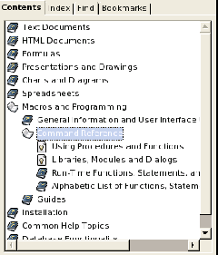
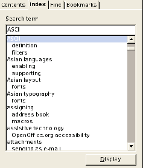
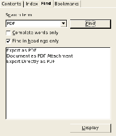
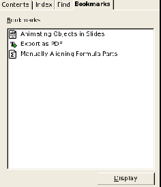
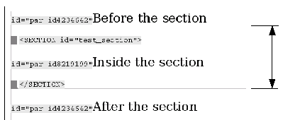

OpenOffice.org 2.0
Understanding, Authoring and Editing
OPENOFFICE.ORG HELP
Author:
Frank Peters, Sun Microsystems (fpe@openoffice.org)
Version:
2.0_16
Date:
Feb 3, 2006
Public Documentation License Notice
The contents of this Documentation are subject to the Public Documentation License Version 1.0 (the "License"); you may only
use this Documentation if you comply with the terms of this License. A copy of the License is available at
http://www.openoffice.org/licenses/PDL.html.
The Initial Writer of the Original Documentation is Sun Microsystems Inc. Copyright (C) 2005. All Rights Reserved. (Initial Writer
contact(s): fpe@sun.com).
Contributor(s): ______________________________________.
Contents
1 How OpenOffice Help Works..........9
Help Ingredients..........9
Extended Tips...........9
Context-Sensitive Help..........9
Hierarchical List of Contents..........10
Index of Keywords..........10
Full-Text Search..........10
Bookmarks..........11
Help Agent..........11
Installed Help Files..........13
Help Modules and Help Sections..........13
Help Module Configuration Files..........14
Help Module Contents Files (Section Archives)..........15
Help Module Lookup Tables (Databases)..........15
Help Module Extended Tip Files..........15
Help Module Index Files..........16
The Main Transformation Style Sheet..........16
The Cascading Style Sheets..........16
Application Help Calls..........16
Structure of the CVS Help Module..........18
Building the Help Set..........19
Setting Up a Build Environment..........19
Makefiles for the Help..........19
Help Build Process..........21
Adding a help file to or Removing a help file from the set of help files..........22
Help Images..........22
2 Help File XML Format Basics..........23
Basic Document Structure..........23
Using Variables..........23
Paragraph Roles..........24
Defining Index, Contents, and Context Sensitivity..........25
Contents Branch..........25
Index Branch..........26
"hid" Branch..........26
Switching Content..........27
Switching Complete Paragraphs or Sections..........27
Switching Text Fragments Inside Paragraphs..........28
Embedding Content..........28
Embedding Complete Sections..........29
Embedding text fragments..........29
Images and Icons..........30
Localization Information..........31
Auxiliary Files..........31
Files used for building the help..........31
Main transformation stylesheet..........32
Contents definition files *..........tree..........32
3 Help File XML Reference..........35
Common Attributes..........35
xml-Lang..........35
localize..........36
id..........36
Help File (*..........xhp) Elements..........37
ahelp..........37
alt..........38
body..........38
bookmark..........39
bookmark_value..........40
br..........41
caption..........41
case..........42
caseinline..........43
comment..........43
created..........44
default..........45
defaultinline..........45
embed..........46
embedvar..........47
emph..........48
filename..........48
helpdocument..........49
help-id-missing..........49
History..........50
image..........50
item..........51
lastedited..........52
link..........53
list..........54
listitem..........55
meta..........56
object..........57
paragraph..........58
section..........59
sort..........60
switch..........61
switchinline..........62
table..........63
tablecell..........64
tablerow..........66
title..........67
topic..........68
variable..........69
Contents File (*..........tree) Elements..........70
Tree_view..........70
help_section..........71
Node..........72
Topic..........72
4 Authoring Help With OpenOffic.org ..........75
Setting Up the Environment ..........75
Directory Hierarchy..........75
Installing the Import/Export Filters..........76
Installing the Supporting Macros..........76
Installing the Help Authoring Menu..........77
Editing Help Files - Basics..........78
Paragraphs and Paragraph Formatting..........78
Sections..........79
Tables..........79
Images..........79
Lists..........79
Embedding..........79
Character Formatting..........80
Working With the Help Files..........80
Creating a Help File..........80
Opening a Help File..........81
Removing a Help File..........81
Moving a Help File..........82
Sections and Paragraphs..........82
Where are the Sections?..........82
Adding a Section..........83
Adding a Subsection..........84
Removing a Section..........84
Linking to a Section..........84
Embedding a Section..........84
Adding a Paragraph..........84
Editing a Paragraph..........85
Paragraph Formatting..........86
Creating New Styles..........87
Changing a Paragraph Style..........87
Changing a Character Style..........87
Moving a Paragraph Inside a Help File..........87
Moving a Paragraph to a Different Help File..........87
Excluding a Paragraph from Localization..........88
Tables ..........89
Adding a Table...89
Modifying the Table Layout...89
Deleting a Table...90
Using a Table for Formatting Purposes...90
Adding a caption to an existing table...90
Lists...90
Inserting, removing, modifying lists...90
Interrupting a List...90
Working with Images...91
Help Image Repository...91
Inserting a block image...92
Inserting an inline image...92
Adding an image caption...93
Embedding Content ...93
Embedding a Section or Variable...93
Linking...94
Linking to another Help file...94
Linking to the WWW...94
Meta Data...94
Setting the topic title...95
Setting the topic ID...95
Excluding a file from the search index...95
Changing the initial file creation comment...95
Changing the Last Edited comment...95
Bookmarks...95
Adding a new bookmark set with Index Entries...95
Adding Index Entries to an existing bookmark set...96
Modifying Index Entries in an existing bookmark set...97
Adding a new bookmark set with TOC Entries[]...97
Adding TOC Entries to an existing bookmark set...97
Determining A Help ID...98
Adding a Help ID...98
Switching Content...99
Inline switching...99
Switching complete sections or paragraphs...100
Miscellaneous...103
Extended Tips...103
Sorting...103
Validating...103
Troubleshooting...104
A help file cannot be opened...104
A help file cannot be saved...104
No Help file can be opened or saved...104
Paragraph content has vanished on Reload...104
5 Appendix...105
Glossary...105
XML Help Document Type Definition...108
1 How OpenOffice.org Help Works
This chapter gives an overview of the OpenOffice.org 2.0 help system. It describesthe different features of the help system, how it is organized, and how it is built from
the source files.
Help Ingredients
The OpenOffice.org help system comprises different help features, which are
explained in detail in the following sections.
Extended Tips
Extended Tips are yellow pop-up windows that appear on the application userinterface (UI), and display a short reference text for an element. An extended tip for a
particular UI element is triggered by resting the mouse over that element for a short
amount of time (approx. 1 second). On moving the mouse, the extended tip
disappears.
Display of extended tips is enabled by choosing HelpTools -> Options ->
OpenOffice.org -> General -> Tips -> Extended Tips, or by pressing
Shift+F1.
When the extended tips are enabled by pressing Shift+F1, the tips are displayed
without any delay. This mode is exited when a mouse button is clicked.
Extended tips use Help Ids, which are assigned to UI elements to find the correct text
for that UI element. The text itself is defined in the help files inside the ahelp element.
For more information about the structure of the help files, please refer to chapter 2:
"Help File XML format Basics" on page 23.
Context-Sensitive Help
OpenOffice.org Help is context-sensitive, which means that the help viewer displaysreference information or instructions for the current application context when the help
is called from within the application.
9
Context-sensitive help is invoked by pressing F1 or clicking the Help button in a
dialog.
Help IDs are used to identify the context. A lookup table is used to find the correct
anchor inside the help file set (see also Application Help Calls on page 16).
Not all contexts are actually mapped to help topics. In that case, the start page of the corresponding
help section is shown.
Hierarchical List Of Contents
There is a hierarchical list of help contents available from the Contents tab page of
the help viewer. This should not be considered a complete table of contents, like in a
book, but a selection of help topics sorted by different application/document types and
task groups (see Fig. 1 on page 12).
Help topics can appear more than once if they fit into multiple application/task groups.
Currently, these contents trees are manually compiled and saved in *.tree files.
In the future, these contents lists will be able to be defined within the help files
themselves. The *.tree files will then be created when the help is compiled in the
software build cycle.
Note that, although the corresponding elements are included in the help format, these are not yet
evaluated by the help compiler. The tree files must still be generated manually.
Index Of Keywords
The Index tab page of the help viewer contains a two-level keyword index. These
two levels allow for a basic grouping of keywords. The index is displayed per help
module (see Fig. 2 on page 12).
After selecting an OpenOffice.org help module from the dropdown list at the top left of
the help viewer, the corresponding list of keywords is loaded.
Typing a search term directly causes a jump to the next suitable first-level entry in the
index list.
The keywords are defined inside the help files as bookmarks. See also section
Bookmarks on page 95.
Full-Text Search
The Find tab page allows you to search through the help content. You can only
search through one help module at a time (see Fig. 3 on page 12).
10
By default, the search engine searches for case-insensitive substrings that appear
anywhere in a help file. You can restrict the search scope by specifying a search for
complete words only, and to only search headings in help files.
The results are displayed sorted by search rank, showing the best matches at the top
of the list.
Bookmarks
The Bookmarks tab page lists user-defined bookmarks that correspond to help
pages. User-defined bookmarks from al help modules can belong to this list. The icon
next to a bookmark indicates the help module to which the bookmark belongs (see
Fig. 4 on page 12).
Double-clicking the bookmark takes you back to the corresponding help page.
Bookmarks can be named individual y.
Don't confuse these bookmarks with the bookmark element in the help XML format.
Help Agent
The Help Agent is a smal notification window that appears when the user is in a
certain context, for example, when the AutoCorrect function has automatical y
modified the text. Clicking the window opens the help at the location that is assigned
to that context.
As with the extended tips and the context sensitive help, the context for the Help
Agent is specified using Help IDs. The IDs that trigger the display of the Help Agent
are defined in the file SFX.xcu in the directory -- share/registry/data/org/openoffice/Office.
This file is not part of the helpcontent2 svn project.
11
Fig. 1: List of contents

Fig. 2: Keyword Index

Fig. 3: Full Text Search

Fig. 4: Bookmarks

12
Installed Help Files
On installation, a help directory is created as child of the main OpenOffice.org
directory. It contains al global files (currently only main_transform.xsl), and one or
more subdirectories with language-dependent files. The language directories are
designated by ISO codes, for example, en-US for US-English. The contents of this
language directory are as follows:
| Directory/File | Description |
|---|---|
| help/ | The main help directory |
| help/main_transform.xsl | The main transformation style sheet (see The Main Transformation Style Sheet below) |
|
help/{lang} |
The language dependent help files |
| help/{lang}/*.css | The cascading style sheets for displaying the help in the help viewer (see The Cascading Style Sheets below) |
| help/{lang}/err.html |
The error file. This file is called whenever a help page can not be found. |
| help/{lang}/shared.jar | The help file archive for shared help files |
| help/{lang}/shared.tree | The contents file for shared help files (see Help Module Contents Files (Section Archives)) |
| help/{lang}/schart.jar | The help file archive for help files dealing with charts [1] |
| help/{lang}/schart.tree | The contents file for help files dealing with charts (see Help Module Contents Files (Section Archives) )[1] |
| help/{lang}/{module}.cfg | The configuration files for a help module (see Help Module Configuration Files ) |
| help/{lang}/{module}.db | The lookup tables for a help module (see Help Module Lookup Tables (Databases) ) |
| help/{lang}/{module}.ht | The extended tips for a help module (see Help Module Extended Tip Files ) |
| help/{lang}/{module}.idx/ | The full text search index for a help module |
| help/{lang}/{module}.jar | The help file archive for a help module |
| help/{lang}/{module}.key | The index file for a help module (see Help Module Index Files ) |
| help/{lang}/{module}.tree |
The contents file for a help module (see Help Module Contents |
Help Modules And Help Sections
The help is divided into different help modules that can be selected using the drop
down list at the top left of the help viewer. These correspond to the applications or
modules of OpenOffice.org.
1
This is a legacy remainder of an older StarOffice help structure.
13
Each help file (*.xhp) has a scope that consists of one or more help sections and
includes the corresponding help file archives *.jar. These archives contain al help
files of a help section. A help section does not correspond to an application of
OpenOffice.org.
In the help file viewer, the index and the full text search work within this scope only.
The distinction between help module and help section is confusing and will be eradicated in the
future. Basically, a help section contains all files that are found inside the text/{section} path
of the help source directory (see Structure of the CVS Help Module on page 18 for the structure of
the help source module). Each help section produces a *.jar archive containing all help files in
that path. A help module takes one or more sections and combines them to form the scope of a
module.
| Help module |
Help Sections (Scope) |
|---|---|
| BASIC |
sbasic + shared |
| Calc |
scalc + shared + schart |
| Draw |
sdraw + simpress + shared + schart |
| Impress |
sdraw + simpress + shared + schart |
| Math |
smath + shared /td> |
| Writer |
swriter + shared + schart |
| Base[2] |
shared/explorer/database |
From the table above, it follows that the scope for the Writer help module includes al
help files from swriter.jar, shared.jar and schart.jar. Each help module has a
set of six files (cfg, db, ht, jar, key, tree) and an *.idx directory associated with it
except for Draw and Base, which have no *.tree file.[3]
Help Module Configuration Files
The *.cfg configuration files are ASCII files containing parameter=value pairs with
configuration information. They are created and maintained manually:
Title=%PRODUCTNAME Writer
Copyright=Copyright 2004, Sun Microsystems, Inc.
Language=en-US
Order=2
Start=text%2Fswriter%2Fmain0000.xhp
Heading=headingheading
Program=WRITER
07.07.04 00:00:00
* For historical reasons, the contents for Draw are included in the simpress.tree file and the contents for Base (database) are included in
the shared.tree file.
14
Title specifies the help module title as displayed in the drop down list at the top
left of the help viewer.
Copyright is a copyright string.
Language specifies the help language for the help module.
Order was used in an earlier implementation and is deprecated.
Start defines the start page for a help module. The slashes in the path name are
encoded as %2F. The start page must be contained in the archive that has the
same name as the configuration file (swriter.jar for swriter.cfg)
Heading defines an internal value that is used by the ful text search engine.
Program specifies the application name that will be used for switching content
(see Switching Content on page 99)
The last line contains the creation date. Use of this is deprecated. It is not
evaluated anywhere.
Help Module Contents Files (Section Archives)
The *.jar contents files contain the help topic files for a help section (see Help
Modules and Help Sections ). It is an archive file with a subdirectory structure that
contains all help xhp files. There is one archive per help section (sbasic, shared,
sdraw, simpress, scalc, schart, swriter, smath). Each help module comprises more
than one help section (see Help Modules and Help Sections ).
Help Module Lookup Tables (Databases)
The lookup tables *.db are Berkeley databases that contain a lookup table used by
the help application to find a help page to display for a given help ID. The tables are
used for referencing context sensitive help pages when help is cal ed from the
application. They are not used for cal ing help files from within other help files. This is
designated by the parameter UseDB=no in the help file URL (see Application Help
Cal s on page 16). The data for that table come from the bookmark elements in the
help files (see Bookmarks on page 95).
Help Module Extended Tip Files
The files *.ht are Berkeley databases that contain the extended help tip text for al
Help IDs. The application uses these files to fetch the text for an extended tip for a
given Help ID.
The data for that table come from the bookmark elements in conjunction with the
ahelp elements in the help files (see Bookmarks on page 95). It is extracted from the
help files at compile time.
15
Help Module Index Files
The files *.key are Berkeley databases that contain the index entries for the help
modules.
The data for that table come from the bookmark elements in the help files (see
Bookmarks on page 95). It is extracted from the help files at compile time.
The Main Transformation Style Sheet
The file main_transform.xsl is global for al languages and help files and is used for
final transformation of the xhp help file to yield an html file that is displayed by the help
viewer component.
This style sheet is responsible for converting XML help elements and classes into
HTML elements and classes. The overal layout of the help file is specified using this
style sheet. The graphical appearance is control ed by the cascading style sheets (see
The Cascading Style Sheets).
The Cascading Style Sheets
The cascading style sheets *.css describe the formatting style for the help page.
Since different locales require different fonts and font effects, the cascading style
sheets are language dependent. There is one set of style sheets per language.
The OpenOffice.org help viewer only recognizes some basic CSS2 commands. There
are five style sheets available, four of which account for special accessibility issues.
They are selected in the application using Tools -> Options -> OpenOffice.org -> General -> Help Formatting.
Application Help Calls
This section briefly describes what happens when a help file is called from the
application or from within the help itself (links or embeddings).
- (F1 or Help Button)
- 1. When F1 or a help button is pressed in an OpenOffice.org application, a help
request is sent as an URL to the help content provider. - $module.db
- 2. The help ID is resolved to a help file using the help lookup table for the
application ($module.db).
3. When a help file is called from within the help, the URL sent to the help
content provider contains the file path. There is no need for resolving the ID. - $module.jar
- 4. The help file is extracted from the corresponding help file archive
($module.jar). - main_transform.xsl
- 5. The extracted help file is transformed into HTML using the
main_transform.xsl style sheet and sent to the help viewer for display. The
stylesheet main_transform.xsl controls all conversion from xhp to html, and
must be adjusted whenever new elements, attributes, or attribute values must
be taken into account. - Viewer
- 6. Displays the help
The URLs sent to the help content provider have two forms:
- URLs from the application
- vnd.sun.star.help://swriter/12345?Language=en-US&System=UNIX
- URLs send within the help:
- vnd.sun.star.help://swriter/text/swriter/main0100.xhp?Language=en-
US&System=UNIX&UseDB=no&DbPAR=swriter
The help archive jar file to use: swriter
The help ID to look up, or the name of the file to extract: 12345 or
swriter/text/swriter/main0100.xhp
A parameter for the current language: Language=en-US
A parameter for the current operating system: System=UNIX
A parameter to disable help ID lookup (only for help internal URLs): UseDB=no
A parameter to describe the current help context (module): DbPAR=swriter
This can differ from the help archive jar file used (see also Help Modules and
Help Sections on page 13).
17
Structure of the Help Source Module
The help source files and all helper files are located in the CVS module
helpcontent2. The directory layout is as follows:
| Directory | Content |
|---|---|
| helpcontent2/ |
The module's main directory |
| helpcontent2/helpers | Files that are not used by the help content itself, like the DTD for the XML help format. |
| helpcontent2/helpers/helpauthoring | The help authoring environment for OpenOffice.org, see Authoring Help With OpenOffice.org on page 75. |
| helpcontent2/source | The help source files that are used to build the help. |
| helpcontent2/source/auxiliary | Auxiliary files that do not contain help content but are still needed for building the help, style sheets, configuration files (see Auxiliary Files on page 31) |
| helpcontent2/source/text | The help content source files, the makefiles for the help compiler, and the localized content. Every subdirectory contains its own makefile and a file with all localized content. |
| helpcontent2/source/text/sbasic |
Help files specific to BASIC (and the IDE). |
| helpcontent2/source/text/scalc |
Help files specific to the Calc module. |
| helpcontent2/source/text/schart |
Help files specific to charts. |
| helpcontent2/source/text/sdraw |
Help files specific to the Draw module. |
| helpcontent2/source/text/shared |
Help files common to two or more modules. |
| helpcontent2/source/text/simpress |
Help files specific to the Impress module. |
| helpcontent2/source/text/smath |
Help files specific to the Math module. |
| helpcontent2/source/text/swriter |
Help files specific to the Writer module. |
| helpcontent2/prj |
The build lists. |
| helpcontent2/util |
The makefiles for the help linker (see Makefiles for linking the compiled files on page 20). |
application icons are directly taken from the images.zip repository in the share/config
directory.
Images specific to the help need to be added to the CVS default_images module in the
helpimg subdirectory. These willthen also be included in the images.zip archive.
18
Building the Help Set
Setting Up A Build Environment
This is described on tools.openoffice.org.Makefiles For The Help
The helpcontent2 module contains three types of makefiles:1. Makefiles for compiling the help source files
These makefiles are found in the
helpcontent2/source/text directories. Every subdirectory that contains help files to be compiled has a
corresponding makefile, for example (shortened for clarity):
#***************************************************************
#***************************************************************
# edit to match directory level
PRJ = ..$/..$/..$/..
# same for all makefiles in "helpcontent2"
PRJNAME = helpcontent2
# edit to match the current package
PACKAGE = text/sbasic/guide
# uniqe name (module wide);
# using a modified forme of package should do here
TARGET = text_sbasic_guide
# edit to match the current module
MODULE = sbasic
# --- Settings ------------------------------------------------
.INCLUDE : settings.mk
.INCLUDE : $(PRJ)$/settings.pmk
# this list matches the *.xhp files to process
HZIPFILES = \
control_properties.hzip \
create_dialog.hzip \
insert_control.hzip \
sample_code.hzip \
show_dialog.hzip
# --- Targets -------------------------------------------------
.INCLUDE : target.mk
.INCLUDE : $(PRJ)$/makefile.pmk
You find a template for this makefile in helpcontent2/helpers. This
template is used when the makefiles are created using the
createmakefile.pl script in helpcontent2/helpers. Use this script for
makefile creation and don't modify the makefiles manually.
19
2. Makefiles for linking the compiled files.
These makefiles are found in the subdirectories of
helpcontent2/util (the directory itself contains the third type of makefile), for example (shortened for
clarity):
#**************************************************************
#**************************************************************
# edit to match directory level
PRJ = ..$/..
# same for all makefiles in "helpcontent2"
PRJNAME = helpcontent2
# uniqe name (module wide);
# using a modified forme of package should do here
TARGET = util_sbasic
# --- Settings ------------------------------------------------
.INCLUDE : settings.mk
.INCLUDE : $(PRJ)$/settings.pmk
.IF "$(SOLAR_JAVA)"!=""
common_build_zip:=
zip1generatedlangs=TRUE
zip1langdirs=$(aux_alllangiso)
ZIP1TARGET=xhp_sbasic
ZIP1FLAGS= -u -r
ZIP1DIR=$(MISC)$/$(LANGDIR)
ZIP1LIST=$(LANGDIR)$/text$/sbasic$/* -x "*.dphh*" \
-x "*.hzip" -x "*.created"
.ENDIF
# "$(SOLAR_JAVA)"!=""
LINKNAME=sbasic
LINKADDEDFILES= \
-add sbasic.cfg
$(PRJ)$/source$/auxiliary$/LANGUAGE$/sbasic.cfg \
-add sbasic.tree
$(PRJ)$/source$/auxiliary$/LANGUAGE$/sbasic.tree \
-add sbasic.jar $(BIN)$/xhp_sbasic_LANGUAGE.zip
LINKADDEDDEPS= \
$(PRJ)$/source$/auxiliary$/LANGUAGE$/sbasic.cfg \
$(PRJ)$/source$/auxiliary$/LANGUAGE$/sbasic.tree \
$(BIN)$/xhp_sbasic_LANGUAGE.zip
LINKLINKFILES= \
text$/sbasic$/guide$/control_properties.hzip \
text$/sbasic$/guide$/create_dialog.hzip \
text$/sbasic$/guide$/insert_control.hzip \
text$/sbasic$/guide$/sample_code.hzip \
text$/sbasic$/guide$/show_dialog.hzip \
20
# --- Targets -------------------------------------------------
.INCLUDE : target.mk
.INCLUDE : $(PRJ)$/util$/target.pmk
You find a template for this makefile in helpcontent2/helpers. This template is used when the makefiles are created using the
createmakefile.pl script in helpcontent2/helpers. Use this script for
makefile creation and not to modify the makefiles manual y.
3. A makefile for creating the stylesheet archive in
helpcontent2/util (shortened for clarity):
#**************************************************************
#**************************************************************
# edit to match directory level
PRJ = ..
# same for all makefiles in "helpcontent2"
PRJNAME = helpcontent2
# uniqe name (module wide);
# using a modified forme of package should do here
TARGET = plain_util
# --- Settings ------------------------------------------------
.INCLUDE : settings.mk
.INCLUDE : $(PRJ)$/settings.pmk
ZIP1TARGET=helpxsl
ZIP1FLAGS= -u -r
ZIP1DIR=$(PRJ)$/source$/auxiliary
ZIP1LIST=main_transform*.xsl
# --- Targets -------------------------------------------------
.INCLUDE : target.mk
ALLTAR : $(COMMONBIN)$/helpimg.ilst
$(COMMONBIN)$/helpimg.ilst: helpimg.ilst
$(COPY) $< $@
Help Build Process
The file
helpconten2/prj/build.lst defines which directories are built using a directory's makefile. Dependencies (which directories need to be built first) are also
defined here.More information about the build process for OpenOffice.org in general can be found on http://tools.openoffice.org,
http://ooo.ximian.com/hackers-guide.html, or on http://go-oo.org/wiki/index.php/Main_Page.
Initiate a help build by issuing the command
build while in the helpcontent2 directory.
21
misc subdirectory of the platform directory of the output tree. This step produces
a set of *.hzip files and dependency files *.dphh. These files are the particles
that are used to create the help modules in the next the linking step.
archive. Other files are added from the helpcontent2/source/auxiliary
directory to that archive as defined in the makefiles of the subdirectories in
helpcontent2/util. This results in one zip archive per help module and
language in the bin subdirectory of the platform directory of the output tree.
helpcontent2/util.
Adding A Help File To Or Removing A Help File From The Set Of Help Files
The makefiles need to be adjusted to reflect the changes you made to the set of files.If you added a new file, add this to the makefile of its directory and to the link makefile
(in helpcontent2/util/*) of any module that wil contain the file. If you deleted a
help file, remove it from the makefile of its directory and from the link makefile (in
helpcontent2/util/*) of any module that contains the file.
The safest way is to run the create_makefiles.pl script from helpcontent2/helpers to update the
makefiles.
If you rebuild the help after help files have been deleted, or after dependencies
(references) between the files have been changed, you need to remove al
dependency files from the misc directory that are no longer valid. To be perfectly safe,
you can remove the complete output tree for the platform of the helpcontent2
module.
Help Images
Images that are used inside the help are stored in different modules and accessed by
the help viewer using the images.zip archive on runtime. Therefore, you need to add
help images, such as screenshots, to the helpimg directory of the default_images
module. Including the help images to the images.zip repository is control ed by the
helpimg.ilst file that is found in the util directory of helpcontent2.
The helpimg.ilst file contains all image files to be included for helpcontent2, one
file per line. The variable
%GLOBALRES% is used to designate the default image directory:
%GLOBALRES%/helpimg/calcein.png
Don't forget the localized files in the subdirectories.
22
2 Help File XML Format Basics
Basic Document Structure
The basic structure of a valid help file for OpenOffice.org consists of a helpdocumentroot element with one meta and one body sub-element containing the content (body)
and meta information (meta). The minimum information is a topic title and the filename
inside the elements
/helpdocument/meta/topic/title and
/helpdocument/meta/topic/filename
<?xml version="1.0" encoding="UTF-8"?>
<helpdocument version="1.0">
<meta>
<topic id="someid" indexer="include" status="PUBLISH">
<title xml-lang="en-US" id="tit">Topic Title</title>
<filename>text/swriter/01/012345.xhp</filename>
</topic>
</meta>
<body>
</body>
</helpdocument>
The help file extension is xhp.Using Variables
In the help files the following variables are used to designate the name and theversion of the product. This is to allow for correct branding of the product (for
example, OpenOffice.org vs. StarOffice). You must never use the literal name of the
product but instead one of the following variables (In addition to these variables, the following two variables are still used in the help files for legacy reasons but deprecated: $[officename]
and $[officeversion].):
23
%PRODUCTNAME designates the name of the product, for example OpenOffice.org.
%PRODUCTVERSION designates the current version of the product, for example 2.0.
Both variables are replaced by the main transformation style sheet
main_transform.xsl (see page 16) when the help is displayed. The corresponding
information is taken from the application's configuration information and passed to the
style sheet (see The Main Transformation Style Sheet on page 16).
Paragraph Roles
The main element for help content is a paragraph. There is no heading element,
instead al headings are treated as paragraphs with a heading role. The role attribute
defines the role of a paragraph with the paragraph role being the standard. The
values for the role attribute are not defined in the DTD.
During the conversion process (XMLHTML) the role attribute is mapped to a class
attribute of the corresponding HTML element allowing to influence the layout of the
corresponding paragraph using cascading style sheets.[7]
The following roles are currently suggested and defined in the help authoring
template. More roles can be defined as required (see also Paragraph Formatting on
page 86):
| Role | Description | Converts to... |
|---|---|---|
| paragraph |
A standard paragraph |
<p class="paragraph">... </p> |
| heading |
A heading |
<h1>...</h1> If this role is assigned to a paragraph, the to heading level has to be specified using <h6>...</h6> the level attribute of the paragraph element. |
| note |
A note |
<p class="note">...</p> |
| warning |
A warning |
<p class="warning">...</p> |
| tip |
A tip |
<p class="tip">...</p> |
| code |
A code fragment |
<p class="code">...</p> |
| example |
An example |
<p class="example"> ...</p> |
| tablehead |
A table head (first rows) |
<p class="tablehead"> ...</p> |
| tablecontent |
Table contents |
<p class="tablecontent"> ...</p> |
If you use other roles, you must ensure that they are taken into account by the CSS
files that define the help file display format.
Defining Index, Contents, and Context Sensitivity
The help uses one unified bookmarking system to set anchors inside the help fileswhich are used by the Index tab, the Contents tab and for context-sensitive help.
The main element is the bookmark element. A bookmark has a branch attribute
representing the purpose of the bookmark. Currently there are three branches
defined: contents, index, and hid.
To define an anchor for a bookmark inside a help document, the element <bookmark>
has to be positioned at the place the bookmark wil point to. The branch attribute
specifies the type of bookmark to be defined (a content entry, an index entry, or a help
ID), while the sub-element bookmark_value contains the visible bookmark text, if
applicable.
The only child element that is allowed inside the bookmark_value is embedvar to allow
embedding of commonly used titles for content nodes or index entries. For examples of using
embedded fragments inside bookmark values, refer to the next sections.
Contents Branch
Content entries are displayed on the Content tab page of the help viewer. The branchattribute takes the value contents. The bookmark value can contain any number of
levels separated by slashes, with the last part of the bookmark value serving as the
entry and the other parts serving as nodes.
Note that currently the contents branch is not implemented in the help build process.
Example
<bookmark branch="contents"
xml-lang="en-US" id="bm1">
<bookmark_value>
Text Documents/
Objects in Text Documents/
Positioning Objects
</bookmark_value>
</bookmark>
A bookmark value can also contain embedded fragments for node titles. This reduces redundancy, maintenance effort, and the risk of introducing errors through typos. This
can be avoided if the top level entries for the content tree are defined separately:
25
<variable id="textdocs">Text Documents</variable>
<variable id="objtextdocs">Objects in Text Documents</variable>
and embedded as text fragments:
<bookmark_value>
<embedvar href="/text/shared/00/variables.xhp#textdocs"/>/
<embedvar href="/text/shared/00/variables.xhp#objtextdocs"/>/
...
</bookmark>
Index Branch
Index Entries are displayed on the Index tab page of the help viewer. The branchattribute takes the value index Currently, index entries can contain two levels
separated by a semicolon.
Example:
<bookmark branch="index" id="bm1" xml-lang="en-US">
<bookmark_value>
editor;contour editor
</bookmark_value>
</bookmark>
As with content entries, the bookmark values for index entries can contain embedded text fragments by using the embedvar element, which can be useful if names of UI
elements are used that are subject to change.
"hid" Branch
Help IDs are never displayed but instead trigger context-sensitive help inside
OpenOffice.org. The branch attribute takes the value hid and in addition contains the
help ID associated with the bookmark.
<bookmark id="bm_9876" xml-lang="en-US"
branch="hid/HID_SOME_HELP_ID"/>
A bookmark for a given help ID can only be used once inside the help files since the bookmark defines the entry point for the help viewer when context-sensitive help is
triggered from the UI either through the use of the F1 key or the Help button.
There are two types of help IDs currently used in the help files:
Symbolic names, like
SID_FM_CONVERTTO_IMAGECONTROL UNO command names, like
.uno:InsertCtrlFor details on determining the help ID for a UI element, see Determining A Help ID on
page 98.
26
Switching Content
In some cases it is necessary to distinguish between different platforms or
applications when displaying the help. For example, on one platform a key stroke to
achieve a certain action can differ from the key stroke used on other platforms. To
avoid duplicating large amounts of text and to reduce redundancy, switching elements
are available, which are used to select the correct portion of the content at runtime.
The help content provider sends additional information along with a help request that
states the current platform, language and application context. This information can be
evaluated using the switch constructs to display the corresponding information.
There are two types of content switching:
Switching complete paragraphs or sections
and
Switching text fragments inside paragraphs
Currently, the following values are used for the select attribute of a switch and switchinline element to specify the switching context:
| Value | Switching context | Example/Comment |
|---|---|---|
| sys | Operating System | Switching content for Unix, Windows, or Mac platforms. |
| appl | Application | Switching content for different OpenOffice.org applications (Writer, Calc,...) in files that are common to multiple applications. |
| distrib | Distribution[8] | Switching content for different distributions, like OpenOffice.org and StarOffice, which contains extra commercial features. |
The following values are used for the select attribute of a case and caseinline element within a given switching context:
| Switching Context | Values |
|---|---|
| Operating System (sys) WIN UNIX MAC |
Application (appl) WRITER CALC DRAW IMPRESS MATH BASIC CHART |
Switching Complete Paragraphs Or Sections
This type is used, for example, if contents of a paragraph differ considerably ondifferent platforms or for different applications, or if a certain paragraph or section is
only applicable to a certain platform or application.
8
Note, that this switch is currently not evaluated in the main transformation step, since the help content provider does not provide the
necessary information. Currently, the main transformation style sheet uses the value of the product name to distinguish between open source
and commercial distributions, but this is only implemented for StarOffice and OpenOffice.org.
27
For example, while mounting a CD-ROM drive can be a necessary step on a Unix
system, it is usual y not applicable on Windows computers. The switch element can
be used to accomplish this distinction:
<switch select="sys">
<case select="UNIX">
<paragraph>Mount the cd rom drive.</paragraph>
</case>
</switch>
Switching Text Fragments Inside Paragraphs
This type is used if only smal text fragments differ on different platforms orapplications. A typical case is the use of shortcuts on different systems, or the
notation of file paths on different platforms.
For example, while on Windows the standard instal ation path for OpenOffice.org
could be something like C:\Program Files\OpenOffice.org-2.0, it could be
~/OpenOffice.org-2.0 on a Unix system, making it necessary to distinguish
between the operating environments when talking about these paths. The
switchinline element can be used to accomplish the distinction:
<paragraph>The software will be installed in the
<switchinline select="sys">
<caseinline select="UNIX">
~/OpenOffice.org-2.0
</caseinline>
<caseinline select="WIN">
C:\Program Files\OpenOffice.org-2.0
</caseinline>
<defaultinline>
home
</defaultinline>
</switchinline>
directory.</paragraph>
In the code example above, there is also a default value defined by using the optional defaultinline element, which is shown if neither UNIX nor WIN is set as the platform
value when cal ing the help.
Embedding Content
You can also reduce redundant content by defining reusable text fragments andblocks, which can be referenced from other places. The references are resolved at
runtime when the help is displayed, and are temporarily resolved at compile time
when the ful text search index is generated.
There are two ways of reusing content by means of embedding:
Embedding complete sections
Embedding text fragments
28
Embedding Complete Sections
Single or multiple paragraphs can apply to more than one help file. For example,
standard steps inside procedures can be written once and embedded in multiple
places, reducing maintenance and translation effort.
The URL for the reference takes the form file#id. If, for instance, the section with
the ID 12345 from the file text/writer/01/012345.xhp is to be embedded, the URL
would be text/swriter/01/012345.xhp#12345. The file name refers to the path and
name that is stored in the jar files.
Complete sections can be embedded using the embed element. The section to be
embedded is referenced using the attribute ID, which must be unique within the file.
If, for example, multiple processes described in the help involve logging on to a
computer, this particular step can be written once and embedded wherever required:
Example
Original location (filename: original.xhp):
<section id="logon">
<paragraph id="par_id12345" role="paragraph" xml-lang="en-US">
Log on to your computer using your user name and password.
</paragraph>
</section>
Referenced location:
<paragraph id="par_id9876" role="heading" level="1" xml-lang="en-US">
Starting %PRODUCTNAME
</paragraph>
<list>
<listitem><embed href="original.xhp#logon"/></listitem>
<listitem>
<paragraph id="par_id9877" role="paragraph" xml-lang="en-US">
Start %PRODUCTNAME</paragraph>
</listitem>
</list>
This results in the following:
Starting OpenOffice.org
1. Log on to your computer using your user name and your password.
2. Start OpenOffice.org
Embedding Text Fragments
Text fragments can, for example, represent commonly used phrases or names of UIelements. These can be specified once and used in multiple places, reducing
maintenance and localization effort.
29
The URL for the reference takes the form
file#id. If, for instance, the variable with
the ID 12345 from the file text/swriter/01/012345.xhp is to be embedded, the URL would be text/writer/01/012345.xhp#12345. The file name refers to the path
+ name that is stored in the jar files.
These fragments can be embedded using the embedvar element if they are previously
defined as being variables, so that they can be referenced. The text fragment to be
embedded is placed inside a variable element and assigned a unique ID using the
element's id attribute:
Original location (filename: original.xhp):
>
<paragraph id="par_id1234">Press the <variable id="btn_prnprev"><item
Result:
type="button">Print Preview</item></variable> button.</paragraph>
The fragment can then be referenced in other locations using the embedvar element:
Referenced location:
<paragraph id="par_id9876">A preview can be shown using the <embedvar
href="original.xhp#btn_prnprev"/> button.
A preview can be shown using the Print Preview button.
If, for example, the name of the button changes from "Print Preview" to "Show
Preview" you only need to update one location to make the change available in al
referenced locations.
You can also embed the content of paragraphs by referring to the paragraph ID. Note
that only the contents of the paragraph are embedded. The paragraph formatting
information is disregarded:
Referenced location
<paragraph id="par_id433122"><embedvar
id="referenced.xhp#par_id9876"/>
Result:
A preview can be shown using the Print Preview button.
Images and Icons
Al images must be placed inside paragraphs. The image element containsinformation about the image source in the src element and must be assigned a
unique ID. Every image element must also contain a child element alt that contains a
short description of the image used if the visual content is not displayed or cannot be
accessed by visual y impaired users.
30
In addition to the alt element, there is also an optional caption element that can take
a long description as an image caption.
Starting with OpenOffice.org 2.0, the help retrieves al images from the central image
repository images.zip, which is available in the share/config directory of the
OpenOffice.org instal ation. This archive contains al images that OpenOffice.org
uses, separated by modules. The OpenOffice.org Help fetches any icons displayed in
the help files from here. Since this also is the place where the application fetched the
icons to display in the user interface, the icons in the help wil always be in sync with
the application, even if the images.zip archive contains a customized set of images.
The help itself also has a subdirectory inside the images.zip archive that contains al
images that are specific to the help and only used by it, for instance screen captures.
These images are stored under res/helpimg in the archive.
Localization Information
Content that is to be localized is found inside elements with the xml-lang attributethat contains the elements language code. Elements can be excluded from
localization by specifying the localize attribute and setting it to false. Any such
element and all of its child elements wil be excluded from the localization process.
Note that the help does not as yet support the pseudo-language x-comment as value for xml-
lang to designate comments.
Al paragraphs contain an l10n attribute, which is used to specify the localization
status of the paragraph. This attribute was only used in the migration phase and is not
evaluated. It can be used to store a paragraph authoring status to implement basic
content management functionality.
Auxiliary Files
Some auxiliary files are necessary, apart from the help files *.xhp to build the helpset. These are found in the source/auxiliary directory of the helpcontent2
module. Some of them are just used for building the help, and some are included in
the helpset.
Files Used For Building The Help
Apart from the makefile for this directory makefile.mk, there are a number of XSLstylesheets used for help compilation:
default.xsl
31
embed.xsl is used for resolving embedded sections in help files during
compile time to correctly process embedded sections when creating keyword
and ful text search index
index.xsl is used by the corresponding JAVA routine for creating the ful text
search index
Main Transformation Stylesheet
The main transformation stylesheet main_transform.xsl controls the lasttransformation step of the XML files to HTML before they are displayed in the help
viewer. The file contains instructions on how to transform elements of the XML files to
HTML elements to be displayed. It also takes care of some formatting issues, and is
responsible for replacing variables used in the help files.
The help content provider passes some parameters to the stylesheet that are used for
file processing:
Database this parameter identifies the help module context (see also Help
Modules and Help Sections on page 13 ). It can have one of the values
swriter, scalc, sdraw, simpress, schart, sbasic, smath. This value is
used to evaluate application switches (see Switching Content on page 27).
System this parameter identifies the operating system/platform. This value is
used to evaluate system switches (see Switching Content on page 27).
productname and productversion these parameters contain the name and
version string of the product (e.g. "OpenOffice.org" "2.0", or "StarOffice" "8").
These are used to replace the variables
%PRODUCTNAME and %PRODUCTVERSION in the help content (see Using Variables on page 23).imgrepos this parameter contains the physical path to the image repository
images.zip used for requesting the images in the help files.
Id this parameter contains the help ID cal ed. It is displayed in the error
message when the corresponding help file cannot be found.
Language this parameter contains the current locale of the program.
Contents Definition Files *.tree
A number of *.tree files contain the information used to display the table of contentson the contents tab of the help viewer. These are XML files based on the fol owing
simple DTD:
<!ELEMENT tree_view (help_section)+>
<!ATTLIST tree_view
version CDATA #REQUIRED
>
<!ELEMENT help_section (node|topic)*>
<!ATTLIST help_section
32
application CDATA #REQUIRED
id CDATA #REQUIRED
title CDATA #REQUIRED
>
<!ELEMENT node (topic)*>
<!ATTLIST node
id CDATA #REQUIRED
title CDATA #REQUIRED
>
<!ELEMENT topic (#PCDATA)>
<!ATTLIST topic
id CDATA #REQUIRED
>
The main element tree_view encapsulates one or more help_sections that contain
one or more nodes with one or more topics (or further subnodes). The
help_sections are the top-most element in the table of contents as displayed by the
help viewer. Below that, there are nodes, represented by "book" icons in the help
viewer and, final y, topics that can be selected. A node can have sub-nodes.
33
3 Help File XML Reference
This chapter lists all elements of the XML help file DTD in alphabetical order aspresented in the Document Type Definition in the Appendix.
The element sections presented here all share a common structure. The name of the
element serves as a heading and is followed by element details:
- Element Description and Purpose
- Attributes
- Parent Elements
- Child Elements
- Element Definition
- Element Example
Examples for elements can show an element within its parent or child context.
Common Attributes
The following attributes are common to several elements.Xml-Lang
The xml-lang attribute designates elements that need localization. The localization
process identifies elements to be localized by this attribute. It contains the language of
the element it belongs to as a combination of language ISO code (ISO 639-1) and
country ISO code (ISO 3166), separated by a dash.
xml-lang="en-US"
Al elements containing text to be translated have an xml-lang attribute: alt,
bookmark, caption, paragraph, and title.
You can use the comment element to insert comments into the help file. But if they are
outside an element that wil be localized they wil not be recognized by the localizers.
35
Localize
The localize attribute can only take the value false and designates elements that
are excluded from the localization process. If an element contains the localize
attribute set to false, its contents and the contents of all child elements should not
be translated.[9] If the attribute contains any other value than false it wil be ignored.
The attribute is optional.
localize="false"
All elements containing text to be translated or subelements with text to be translated
have an optional localize attribute: alt, body, bookmark, bookmark_value,
caption, list, listitem, paragraph, section, switch, table, tablecell,
tablerow, and title.
Id
The id element contains a unique string used to identify the element for localization
and referencing purposes. The ID must be unique within a help file so that referencing
across files and relocating sections and paragraphs across files is possible.
id="some_unique_value"
Al elements that can be embedded or have to be translated contain a mandatory id
attribute: image, bookmark, paragraph, section, table, title, topic, and
variable.
Valid characters for the id value are capital or smal letters from a-z, numbers from 0-
9, and the underscore, in any combination. Other characters are not al owed.[10]
9
They are automatically excluded in the Sun release engineering localization process.
10 For legacy reasons, the help files contain many IDs that are not valid XML "id" types. Therefore, the id attribute is defined in the DTD to be of
the type CDATA.
36
Help File (*.xhp) Elements
ahelp
This element designates text that is to be used as extended tips (for instance, tool tips
or active help). It can contain text (PCDATA) and child elements. It can only be used as
a child of a paragraph.
The localize attribute can only take the value false and designates elements that
are excluded from the localization process. If an element contains the localize
attribute set to false, its contents and the contents of all child elements should not
be translated.[9] If the attribute contains any other value than false it wil be ignored.
The attribute is optional.
localize="false"
All elements containing text to be translated or subelements with text to be translated have an optional localize attribute: alt, body, bookmark, bookmark_value,
caption, list, listitem, paragraph, section, switch, table, tablecell,
tablerow, and title.
Id
The id element contains a unique string used to identify the element for localization
and referencing purposes. The ID must be unique within a help file so that referencing
across files and relocating sections and paragraphs across files is possible.
id="some_unique_value"
Al elements that can be embedded or have to be translated contain a mandatory id
attribute: image, bookmark, paragraph, section, table, title, topic, and
variable.
Valid characters for the id value are capital or smal letters from a-z, numbers from 0-
9, and the underscore, in any combination. Other characters are not al owed.[10]
9
They are automatically excluded in the Sun release engineering localization process.
10 For legacy reasons, the help files contain many IDs that are not valid XML "id" types. Therefore, the id attribute is defined in the DTD to be of
the type CDATA.
36
Help File (*.xhp) Elements
ahelp
This element designates text that is to be used as extended tips (for instance, tool tipsor active help). It can contain text (PCDATA) and child elements. It can only be used as
a child of a paragraph.
| Attribute | Required | Content | Values Allowed | Description |
|---|---|---|---|---|
| hid | yes | CDATA | The symbolic help ID for which the content is to be displayed. |
|
| visibility | no | fixed value | "hidden", "visible" | The visibility of the ahelp content inside the help viewer. If set to "hidden" the content is only visible in the extended tips popup. |
Parent Elements
caseinline, defaultinline, paragraph, variable
Child Elements
comment, embedvar, br, emph, item, link, variable
Element Definition
<!ELEMENT ahelp (#PCDATA | embedvar | br | comment | emph | item |
link | switchinline | variable)*>
<!ATTLIST ahelp
hid CDATA #REQUIRED
visibility (hidden | visible) #IMPLIED
>
Example:
<ahelp hid="HID_SOME_HID" visibility="hidden">
37
You will only see this text in the extended tips for the ui control
with the help id HID_SOME_HID.
</ahelp>
Alt
This element is used to specify an alternative text for an image. It corresponds to theHTML attribute of the same name and can only contain PCDATA that is localized (no
markup).
Attributes
| Attribute | Required | Content | Values Allowed | Description |
|---|---|---|---|---|
| xml-lang | yes | CDATA | See Common Attributes on page 35. |
|
| id | yes | CDATA | A unique ID to identify the element, see Common Attributes on page 35. |
|
| localize | no | fixed value | "false" | See Common Attributes on page 35. |
Parent Elements
image
Child Elements
none
Element Definition
<!ELEMENT alt (#PCDATA)>
<!ATTLIST alt
xml-lang CDATA #REQUIRED
id CDATA #REQUIRED
localize CDATA #IMPLIED
>
Example:
<image src="img/imagefile.png" id="img_id1235">
<alt xml-lang="en-US" id="alt_id1235">Dialog File Open</alt>
</image>
Body
This element contains al help content information. It cannot itself contain anyPCDATA, but rather only child elements.
| Attribute | Required | Content | Values Allowed | Description |
|---|---|---|---|---|
| localize | no | fixed value | "false" | See Common Attributes on page 35. |
Parent Elements
helpdocument
Child Elements
section, paragraph, table, comment, bookmark, switch, embed, list, sort
Element Definition
<!ELEMENT body (section | paragraph | table | comment | bookmark |
switch | embed | list | sort)*>
<!ATTLIST body
localize CDATA #IMPLIED
>
Example:
<body>
<paragraph>This is the content of a help file</paragraph>
</body>
Bookmark
This element contains information about a bookmark used in the help files. Thebookmark type is specified inside the branch attribute of the bookmark element while the
bookmark value is defined in the child element bookmark_value. For more information
about the bookmarking system in the help please refer to Defining Index, Contents, and
Context Sensitivity on page 25.
| Attribute | Required | Content | Values Allowed | Description |
|---|---|---|---|---|
| branch | yes | fixed value | "contents" "index" "hid" |
The bookmark type specified by the branch inside the unified bookmarks tree. See Defining Index, Contents, and Context Sensitivity on page 25. |
| xml-lang | yes | CDATA | See Common Attributes on page 35. | |
| localize | no | fixed values | "false" | "false" |
Parent Elements
body, case, default, section, topic, tablecell, listitem
Child Elements
bookmark_value
39
Element Definition
<!ELEMENT bookmark (bookmark_value)*>
<!ATTLIST bookmark
branch CDATA #REQUIRED
xml-lang CDATA #REQUIRED
id CDATA #REQUIRED
localize CDATA #IMPLIED
>
Example:
<bookmark branch="contents" xml-lang="en-US" id="bm_id1234">
<bookmark_value>
StarOffice Writer Help/Working with Fields/Editing Field Contents
</bookmark_value>
</bookmark>
<bookmark branch="index" xml-lang="en-US" id="bm_id9876">
<bookmark_value>
Formulas/Exporting
</bookmark_value>
</bookmark>
<bookmark branch="hid/12345"/>
Bookmark_value
This element contains the value of a bookmark. See Defining Index, Contents, andContext Sensitivity on page 25 for details.
Parent Elements
bookmark
Child Elements
embedvar
Element Definition
<!ELEMENT bookmark_value (#PCDATA | embedvar)*>
Example:
<bookmark branch="contents" xml-lang="en-US" id="bm_123">
40
<bookmark_value>
StarOffice Writer Help/Working with Fields/Editing Field Contents
</bookmark_value>
</bookmark>
<bookmark branch="index/scalc" xml-lang="en-US" id="bm_543">
<bookmark_value>
Formulas/Exporting
</bookmark_value>
</bookmark>
<bookmark branch="index/scalc" xml-lang="de-DE" id="bm_543">
<bookmark_value>
Formeln/Exportieren
</bookmark_value>
</bookmark>
Br
This element can be used to place a manual line break. It works like thecorresponding HTML <br> element. The element itself is empty.
Parent Elements
ahelp, caption, caseinline, defaultinline, paragraph, variable
Child Elements
none
Element Definition
<!ELEMENT br EMPTY>
Example:
<paragraph>This line must have a<br/>manual<br/>line
break.</paragraph>
Caption
This element specifies the (optional) caption of an image or a table.| Attribute | Required | Content | Values Allowed | Description |
|---|---|---|---|---|
| xml-lang | yes | CDATA | See Common Attributes on page 35. | |
| id | yes | CDATA | A unique ID to identify the element, see Common Attributes on page 35. |
|
| localize | no | fixed values | "false" | "false" |
Parent Elements
image, table
Child Elements
embedvar, br, emph, item, link, switchinline, variable
Element Definition
<!ELEMENT caption (#PCDATA | embedvar | br | emph | item | link |
switchinline | variable)*>
<!ATTLIST caption
xml-lang CDATA #REQUIRED
id CDATA #REQUIRED
localize CDATA #IMPLIED
>
41
Example:
<table>
<caption xml-lang="en-US" id="cp_1234">
List of all <item type="productname">StarOffice</item> slots.
</caption>
</table>
Case
This elements holds the cases of a switch statement.| Attribute | Required | Content | Values Allowed | Description |
|---|---|---|---|---|
| select | yes | CDATA | Contains the value that is to be evaluated. See Switching Content on page 27 for more information. |
Parent Elements
switch
Child Elements
paragraph, table, comment, bookmark, embed, list, switch, section
Element Definition
<!ELEMENT case (paragraph | table | comment | bookmark | embed |
link | list | switch | section)*>
<!ATTLIST case
select CDATA #REQUIRED
>
Example:
<switch select="sys">
42
<case select="WIN">
<paragraph>This appears in Windows.</paragraph>
</case>
<case select="UNIX">
<paragraph>This appears in Unix.</paragraph>
</case>
<default>
<paragraph>This appears in all other cases</paragraph>
</default>
</switch>
Caseinline
This element holds the cases for an switchinline statement.| Attribute | Required | Content | Values Allowed | Description |
|---|---|---|---|---|
| select | yes | CDATA | Contains the value that is to be evaluated. See Switching Content on page 27 for more information. |
Parent Elements
switchinline
Child Elements
image, embedvar, br, emph, item, link, switchinline, variable, ahelp, object
Element Definition
<!ELEMENT caseinline (#PCDATA | image | embedvar | br | emph |
item | link | switchinline | variable |
ahelp | object)*>
<!ATTLIST caseinline
select CDATA #REQUIRED
>
Example:
<paragraph>Press the
<switchinline select="sys">
<caseinline select="WIN">Ctrl</caseinline>
<caseinline select="MAC">Apple</caseinline>
<defaultinline>any</defaultinline>
</switchinline>
key to start.
</paragraph>
Comment
This element is used for inserting comments into the help files used by theauthor/editor/translator. They are to be removed when the help files are compiled.
Attributes
none
Parent Elements
body, case, default, list, listitem, section, switch, tablecell
43
Child Elements
none
Element Definition
<!ELEMENT comment (#PCDATA)>
Example:
<section>
<comment>FPE: This section is in a draft state!</comment>
</section>
Created
This element holds the date of document creation and additional information (authoror comment).
| Attribute | Required | Content | Values Allowed | Description |
|---|---|---|---|---|
| date | yes | CDATA | Contains the date of document creation in the format YYYY-MM-DDThh:mm:ss where: YYYY = four-digit year MM = two-digit month DD = two-digit day of month hh = two digits of 24 hour mm = two digits of minute ss = two digits of second |
Parent Elements
history
Child Elements
none
Element Definition
<!ELEMENT created (#PCDATA)>
<!ATTLIST created
date CDATA #REQUIRED
>
Example:
<meta>
44
<history>
<created date="2002-05-20T15:15:00">New topic created</created>
<lastedited date="2002-06-20T15:15:00">Made changes</lastedited>
</history>
</meta>
Default
This elements holds the default values for a switch. It is evaluated if al caseelements of a switch element evaluate to false.
Attributes
none
Parent Elements
switch
Child Elements
paragraph, table, comment, bookmark, embed, list, section
Element Definition
<!ELEMENT default (paragraph | table | comment | bookmark |
embed | link | list | switch | section)*>
Example:
<switch select="sys">
<case select="WIN">
<paragraph>This appears in Windows.</paragraph>
</case>
<case select="UNIX">
<paragraph>This appears in Unix.</paragraph>
</case>
<default>
<paragraph>This appears in all other cases</paragraph>
</default>
</switch>
Defaultinline
This elements holds the default values for an inline switch. It is evaluated if allcaseinline elements of a switchinline element evaluate to false.
Attributes
none
Parent Elements
switchinline
Child Elements
image, embedvar, br, emph, item, link, switchinline, variable, ahelp, object
Element Definition
<!ELEMENT defaultinline (#PCDATA | image | embedvar | br | emph |
item | link | switchinline | variable |
ahelp | object)*>
45
Example:
<paragraph>Press the
<switchinline select="sys">
<caseinline select="WIN">Ctrl</caseinline>
<caseinline select="MAC">Apple</caseinline>
<defaultinline>any</defaultinline>
</switchinline>
key to start.
</paragraph>
EmbedThis element is used to embed content from a different source at the current position.
The only elements that can be embedded from somewhere else are sections or
paragraphs, which are identified by their URL. For smal er text fragments, embedvar
can be used. See Embedding Content on page 28.
The optional role attribute can override the role of a paragraph. For embedded
sections, the role attribute has no effect.
Attributes
| Attribute | Required | Contents | Values allowed | Description |
|---|---|---|---|---|
| href |
yes |
URL |
A URL pointing to the content to be embedded. The URL has the form filepath#id. Filepath is the path of the file as contained in the jar archive. |
|
| role |
no |
see Paragraph |
The role in which the embedded Roles on page 24. paragraph will appear. If this attribute is specified the paragraph is displayed with this role overwriting its original role (not applicable for sections). |
|
| level |
no |
fixed values |
numerical value |
The heading level if the role attribute is set to "heading" |
Parent Elements
body, case, default, listitem, section, tablecell
Child Elements
none
Element Definition
<!ELEMENT embed EMPTY>
<!ATTLIST embed
href CDATA #REQUIRED
role CDATA #IMPLIED
level CDATA #IMPLIED
>
46
Example:
<embed href="text/swriter/guide/editing#4711"/>
<embed href="text/scalc/01/0123456#9876" role="warning"/>
Embedvar
This element is used to embed smal er text fragments with and without markup, whichwere previously declared as being variables. See also Embedding Content on page
28.
Attributes
| Attribute | Required | Contents | Values allowed | Description |
|---|---|---|---|---|
| href |
yes |
URL |
A URL pointing to the content to be embedded. The URL has the form filepath#id. Filepath is the path of the file as contained in the jar archive. |
|
| markup |
no |
fixed values |
"keep" "ignore" |
Specifies whether markup contained in the variable to be embedded is ignored or kept in the target position. The default is to keep markup within the text fragment. |
Parent Elements
ahelp, caption, caseinline, defaultinline, link, paragraph, variable
Child Elements
none
Element Definition
<!ELEMENT embedvar EMPTY>
<!ATTLIST embedvar
href CDATA #REQUIRED
markup (keep | ignore) #IMPLIED
>
Example:
<paragraph>This element can be found on the <embedvar
47
href="text/swriter/01/dialogs#fileopen" markup="ignore"/>
dialog.</paragraph>
Emph
This element is used to mark emphasized content. It can only contain PCDATA.Attributes:
none
Parent Elements:
ahelp, caption, caseinline, defaultinline, link, paragraph, variable
Child Elements:
item, comment, help-id-missing
Element Definition:
<!ELEMENT emph (#PCDATA | item | comment)*>
Example:
<paragraph><emph>Never</emph> delete the paragraph</paragraph>
Filename
This element contains the path and name of the help topic file as included in the jarfile, for example, text/swriter/01/1234567.xhp.
Attributes:
none
Parent Elements:
topic
Child Elements:
none
Element Definition:
<!ELEMENT filename (#PCDATA)>
Example:
<filename>text/swriter/01/08154711.xhp</filename>
48
Helpdocument
This is the root element of a help document and contains the meta and body part ofthe help topic.
| Attribute | Required | ontents | Values allowed | Description |
|---|---|---|---|---|
| version | yes | CDATA | Contains the Help XML format version number currently 1.0) for compatibility to future versions. |
Parent Elements:
none
Child Elements:
meta, body
Element Definition
<!ELEMENT helpdocument (meta, body)>
<!ATTLIST helpdocument
version CDATA #REQUIRED
>
Example:
<helpdocument version="1.0">
<meta></meta>
<body></body>
</helpdocument>
Help-id-missing
This element is only used to display the help ID for a help file that cannot be found. Itis only used in the help error page and replaced by the missing help ID.
Parent Elements:
Child Elements:
None
Element Definition:
<!ELEMENT help-id-missing EMPTY>
49
History
This element contains information about the author and the date of creation, as welas the same information about the last editing cycle.
Attributes:
none
Parent Elements
meta
Child Elements
created, lastedited
Element Definition:
<!ELEMENT history (created, lastedited)>
Example:
<meta>
<history>
<created date="2002-05-20T15:15:00">New topic created</created>
<lastedited date="2002-06-20T15:15:00">Made changes</created>
</history>
</meta>
Image
This element carries information about images in the document.Attributes
| Attribute | Required | Contents | Values allowed | Description |
|---|---|---|---|---|
| src | yes | URL | A URL pointing to the image as | included in the picture archive picture.jar. |
| width | no | CDATA | The image width. If missing, it is set to 100%. |
|
| height | no | CDATA | The image height. If missing, it is set to 100% |
|
| id | yes | CDATA | A unique ID to identify the image, see Common Attributes on page 35. |
|
| localize | no | CDATA | Used to designate images that need localization. Used by the transformation style sheet. Only the value true is recognized. |
Parent Elements:
caseinline, defaultinline, paragraph, variable, tablecell
Child Elements:
caption, alt
Element Definition: Parent Elements Child Elements Element Definition Parent Elements Child Elements Element Definition Parent Elements Child Elements Element Definition Parent Elements Child Elements Element Definition Parent Elements Child Elements Element Definition Parent Elements Child Elements Element Definition Parent Elements Child Elements Element Definition Parent Elements Child Elements Element Definition Parent Elements Child Elements Element Definition Parent Elements Child Elements Element Definition Parent Elements Child Elements Element Definition Parent Elements Child Elements Element Definition Parent Elements Child Elements Element Definition
<!ELEMENT image (caption* | alt+)?>
<!ATTLIST image
src CDATA #REQUIRED
width CDATA #IMPLIED
height CDATA #IMPLIED
id CDATA #REQUIRED
>
Example:
<image src="picture/win/common/writermainwin.xhp" id="img4711"
width="75" height="75">
<caption xml-lang="en-US" id="cp4711">
The <emph>main writer windows</emph> showing all
writer toolbars.
</caption>
<alt xml-lang="en-US" id="alt4711">Main program window</alt>
</image>
Item
This generic element is used to mark up objects that are to be formatted in a unique
way. The attribute type is used to specify the item type (a keystroke, a menu item, a
dialog title etc). This element resembles the <span class=""> element in HTML.
Attributes
Attribute
Required
Contents
Values allowed
Description
type
yes
The item type that is used to
format the data, for example
"menuitem".
ahelp, caption, caseinline, defaultinline, link, paragraph, variable, emph
none
<!ELEMENT item (#PCDATA)>
<!ATTLIST item
type CDATA #REQUIRED
>
51
Example:
<paragraph>You see the <item type="dialog">File Open</item> dialog.
</paragraph>
Lastedited
This element contains the date when the document was last edited inside the date
attribute. Additional information can be specified as PCDATA.
Attributes
Attribute
Required
Contents
Values allowed
Description
date
yes
CDATA
Contains the date when the
document was last edited, in the
format
YYYY-MM-DDThh:mm:ss
where:
YYYY = four-digit year
MM = two-digit month
DD = two-digit day of month
hh = two digits of 24 hour
mm = two digits of minute
ss = two digits of second
history
none
<!ELEMENT lastedited (#PCDATA)>
<!ATTLIST lastedited
date CDATA #REQUIRED
>
Example:
<meta>
52
<history>
<created date="2002-05-20T15:15:00">New topic created</created>
<lastedited date="2002-06-20T15:15:00">Made changes</lastedited>
</history>
</meta>
Link
This element contains a link to another document inside or outside the help system.
For links to other help files, the URL syntax is
filename#anchor_target
with
filename
Path and name of the help file as contained in the help jar archive, for
instance text/swriter/01/123345.xhp.
anchor_target
Anchor target to jump to (optional). These can be the IDs of bookmarks,
sections, or paragraphs.
Attributes
Attribute
Required
Contents
Values allowed
Description
href
yes
URL
This contains the link address as
URL.
name
yes
This is the link name, needed to
fulfill accessibility requirements.
type
no
This specifies the link type, for
example, a popup. Currently not
evaluated.
target
no
Can be used to specify a target
frame.
ahelp, caption, caseinline, defaultinline, paragraph, variable
emph, item, variable, embedvar, switchinline
<!ELEMENT link (#PCDATA | embedvar | emph | item | variable |
switchinline)*>
<!ATTLIST link
href CDATA #REQUIRED
name CDATA #REQUIRED
type CDATA #IMPLIED
target CDATA #IMPLIED
>
53
Example:
Please refer to <link href="http://www.openoffice.org" name="Link to
the OpenOffice.org Website">the <emph>OpenOffice.org</emph>
website</link> for further details.
More details can be found in <link
href="text/common/guide/overview.xhp" name="Link to the overview">the
overview</link>.
List
This element represents ordered (numbered) and unordered (bul eted) lists. The
element itself does not contain any PCDATA, but only child elements that carry the
content or comments.
Attributes
Note that not all attributes are currently evaluated in the transformation style sheet (see also The
Main Transformation Style Sheet on page 16)
Attribute
Required
Contents
Values allowed
Description
type
yes
fixed
"ordered" or
"unordered"Describes the list type as either being
ordered (numbered) or unordered
(bulleted).
startwith
no
CDATA
The starting number of an ordered list; if
omitted, the list starts with 1.
format
no
fixed
"1", "i", "I", "a",
The number format used in numbered
values
"A"
(ordered) lists:
"1": arabic numerals
"i": small roman numerals
"I": capital roman numerals
"a": small letters
"A": capital letters
If omitted the list uses "1".
bullet
no
fixed
"disc", "circle",
"square"The bullet to be used in bulleted
(unordered) lists.
localize
no
fixed value
"false"
See Common Attributes on page 35
sorted
no
fixed
"asc", "desc"
valuesSpecifies whether the list should be
sorted, either ascending or descending. If
this attribute is not given, the list is not
sorted. If it is given, the listitem child
elements are sorted according to the
current locale.
body, case, default, section, tablecell
listitem, comment
54
<!ELEMENT list (listitem | (comment)*)+>
<!ATTLIST list
type CDATA #REQUIRED
startwith CDATA #IMPLIED
format (1 | i | I | a | A) #IMPLIED
bullet (disc | circle | square) #IMPLIED
localize CDATA #IMPLIED
sorted (asc | desc) #IMPLIED
>
Example:
<list type="ordered" startwith="5" format="a">
<listitem>...</listitem>
</list>
Listitem
This element holds the contents of a list in child elements.
Attributes
Note that not all attributes are currently evaluated in the transformation style sheet (see also The
Main Transformation Style Sheet on page 16)
Attribute
Required
Contents
Values allowed
Description
format
no
fixed values
"1", "i", "I", "a",
The number format used in numbered
"A"
(ordered) list items:
"1": arabic numerals
"i": small roman numerals
"I": capital roman numerals
"a": small letters
"A": capital letters
If omitted the list item uses the value set
in the list.
bullet
no
fixed values
quot;disc", "circle",
The bullet to be used in bulleted
"square"
(unordered) list items.
localize
no
fixed value
"false"
See Common Attributes on page 35
class
no
list
comment, section, paragraph, table, switch, embed, bookmark
55
<!ELEMENT listitem (comment | section | paragraph | table |
switch | embed | bookmark)*>
<!ATTLIST listitem
format (1 | i | I | a | A) #IMPLIED
bullet (disc | circle | square) #IMPLIED
localize CDATA #IMPLIED
class CDATA #IMPLIED
>
Example:
<listitem bullet="disc">
<paragraph>Insert the CD.</paragraph>
</listitem>
Meta
This element contains sub-elements with data used to organize the help.
Attributes
none
helpdocument
topic, history
<!ELEMENT meta (topic, history?)>
Example:
<helpdocument>
56
<meta>
<history>...</history>
</meta>
<body>
</body>
</helpdocument>
Object
This generic element contains information about objects to be embedded into the help
page like audio or video files. It is reserved for future use.
Attributes
Attribute
Required
Contents
Values allowed
Description
type
yes
CDATA
Specifies the mime type of the
embedded object data.
id
yes
CDATA
A unique ID to identify the image,
see Common Attributes on page
35.
data
yes
CDATA
Specifies the object file.
height
no
CDATA< br>
Specifies the width of the object.
width
no
CDATA
Specifies the height of the object.
paragraph, caseinline, defaultinline, variable
none
<!ELEMENT object EMPTY>
<!ATTLIST object
type CDATA #REQUIRED
id CDATA #REQUIRED
data CDATA #REQUIRED
height CDATA #IMPLIED
width CDATA #IMPLIED
>
Example:
<object data="clock.svg" id="objClock" type="image/svg+xml"
57
width="200" height="200">
<1--Page 58-->
Paragraph
This element is the standard element holding content. The role attribute defines its
context in greater detail. See also Paragraph Roles on page 24.
Attributes
Attribute
Required
Contents
Values allowed
Description
role
yes
CDATA
Describes the current role of the paragraph,
for example a simple paragraph or a heading
or an example or a note. See also Paragraph
Roles on page 24.
level
no
Defines the heading level if the paragraph
role is set to "heading".
id
yes
See Common Attributes on page 35.
l10n
yes
Contains the localization status of the old
help files and is only used for migration
purposes.
xml-lang< br>
yes
CDATA
See Common Attributes on page 35.
oldref
no
CDATA
This contains the reference number used by
the old help files and is only used for
migration purposes.
localize
no
gixed value
"false"
See Common Attributes on page 35
Table 25: Attributes of the paragraph element
body, case, default, listitem, section, tablecell
image, embedvar, br, emph, help-id-missing, item, link, switchinline,
variable, ahelp, object, bookmark
<!ELEMENT paragraph (#PCDATA | image | comment | embedvar | br |
emph | item | link | switchinline | variable |
ahelp | object | bookmark)*>
<!ATTLIST paragraph
role CDATA #REQUIRED
level CDATA #IMPLIED
id CDATA #REQUIRED
l10n CDATA #REQUIRED
xml-lang CDATA #REQUIRED
oldref CDATA #IMPLIED
localize CDATA #IMPLIED
>
58
Example:
<paragraph role="heading" level="1" id="par4711_001" xml_lang="en-US">
Italic characters
</paragraph>
<paragraph role="paragraph" id="par4711_002" xml_lang="en-US">
Proceed as follows to write an italic character
</paragraph>
Section
This element serves as a generic container for multiple elements to make them able
to be embedded in other documents. Each section takes a unique ID which is used
to identify it when embedded in other documents. Subsections are al owed. A
section can only contain sub-elements.
Attributes
Attribute
Required
Contents
Values allowed
Description
id
yes
See Common Attributes on page
35.
localize
no
fixed value
"false"
See Common Attributes on page
35
body, listitem, section, tablecell, case, default
section, paragraph, table, list, comment, bookmark, embed, switch, sort
<!ELEMENT section (section | paragraph | table | list | comment |
bookmark | embed | switch | sort )*>
<!ATTLIST section
id CDATA #REQUIRED
localize CDATA #IMPLIED
>
Example:
<section id="4711"><paragraph>This applies to multiple
59
applications</paragraph><section>
Sort
This element is used to mark up a set of sections that are to be sorted. The sequence
of the sections inside the sort element plays no role for the display sequence.
Note that sorting does not work for embedded sections.
Attributes
Attribute
Required
Contents
Values allowed
Description
order
no
fixed values
"asc", "desc"
Defines the sorting order as being
ascending or descending.
body, section
section
<!ELEMENT sort (section+)>
<!ATTLIST sort
order (asc | desc) #IMPLIED
>
Example:
<sort order="asc">
<table id="tab4711" name="List of Shortcuts"
<section id="123243">...</section>
<section id="24345">...</section>
</sort>
60
Switch
This element is used to switch sections or paragraphs for different platform,
application, distribution, target medium or language context. For switching content
inside paragraphs, switchinline must be used.
Attributes
Attribute
Required
Contents
Values allowed
Description
select
yes
fixed values
"sys"
Defines the context that is to be
"appl"
evaluated, see also Switching
"distrib"
Content on page 27.
"target"
"lang"
"ver"
localize
no
fixed value
"false"
See Common Attributes on page
35
body, listitem, section
case, comment, default
<!ELEMENT switch ((case | comment)* | default?)*>
<!ATTLIST switch
select (sys | appl | distrib | target | lang | ver) #REQUIRED
localize CDATA #IMPLIED
>
61
Example:
<switch select="sys">
<case select="WIN">
<paragraph>This appears in Windows.</paragraph>
</case>
<case select="UNIX">
<paragraph>This appears in Unix.</paragraph>
</case>
<default>
<paragraph>This appears in all other cases</paragraph>
</default>
</switch>
Switchinline
This element is used to switch parts of paragraphs for different platform, application,
distribution, target medium or language context. For switching complete paragraphs or
sections switch must be used.
Attribute
Required
Contents
Values allowed
Description
select
yes
fixed values
"sys", "appl", Defines the context that is to be
"distrib", "target",
evaluated, see also Switching
"lang", "ver"
Content on page 27.
caption, caseinline, defaultinline, paragraph, variable, link
caseinline, defaultinline
<!ELEMENT switchinline ((caseinline)+, (defaultinline?)?)>
<!ATTLIST switchinline
select (sys | appl | distrib | target | ver | lang) #REQUIRED
>
Example:
<paragraph>Press the
62
<switchinline select="sys">
<caseinline select="WIN">Ctrl</caseinline>
<caseinline select="MAC">Apple</caseinline>
<defaultinline>any</defaultinline>
</switchinline>
key to start.
</paragraph>
Table
This element defines a table containing one or more tablerows. The table element
itself only contains child elements.
Attributes
Note that not all attributes are currently evaluated in the transformation style sheet (see also The
Main Transformation Style Sheet on page 16)
Attribute
Required
Contents
Values allowed
Description
name
no
CDATA
Contains a table name.
width
no
CDATA
Contains the width of the table in units as
given in the units attribute. If omitted, the
table width is set by the help viewer.
height
no
CDATA
Contains the height of the table in units as
given in the units attribute. If omitted, the
table height is set by the help viewer.
unit
no
fixed
"px", "pt",
Contains the unit to be used for table width
values
"cm", "in",
and height:
"pct"
px = pixels
pt = points
cm = centimeters
in = inches
pct = percent (%)
If omitted, pixels (px) are used as units.
class
no
CDATA
Contains a class descriptor for the table
which can be used to assign special formats.
id
yes
CDATA
See Common Attributes on page 35.
localize
no
fixed value
"false"
See Common Attributes on page 35
body, case, default, listitem, section
caption, tablerow
<!ELEMENT table (caption*, tablerow+)>
<!ATTLIST table
name CDATA #IMPLIED
width CDATA #IMPLIED
height CDATA #IMPLIED
unit CDATA #IMPLIED
class CDATA #IMPLIED
id CDATA #REQUIRED
localize CDATA #IMPLIED
>
63
Example:
width="90" unit="pct" class="shortcutlist">
<caption>
<paragraph>List of shortcuts</paragraph>
</caption>
<tablerow>...</tablerow>
</table>
Tablecell
This element contains child elements taking the cel content. Complex tables can becreated using the rowspan and colspan attributes of tablecell.
Attributes
Note that not all attributes are currently evaluated in the transformation style sheet (see also The
Main Transformation Style Sheet on page 16)
| Attribute | Required | Contents | Values allowed | Description |
|---|---|---|---|---|
| colspan |
no |
CDATA |
Contains the number of columns spanned by this cell. If omitted, the cell spans 1 column. |
|
| rowspan |
no |
CDATA |
Contains the number of rows spanned by this cell. If omitted, the cell spans 1 row. |
|
| width |
no |
CDATA |
Contains the width of the table cell in units as given in the units attribute. If omitted, the table cell width is set by the help viewer. |
|
| unit |
no |
fixed values |
"px", "pt", "cm", "in",
"pct" |
Contains the unit to be used for width: px = pixels pt = points cm = centimeters in = inches pct = percent (%) If omitted, pixels (px) are used as units. |
| class |
no |
CDATA |
Contains a class descriptor for the table cell, which can be used to assign special formats. |
|
| localize |
no |
fixed value |
"false" |
See Common Attributes on page 35 |
Parent Elements
tablerow
64
Child Elements
section, paragraph, comment, embed, bookmark, image, list
Element Definition
<!ELEMENT tablecell (section | paragraph | comment | embed |
bookmark | image | list)*>
<!ATTLIST tablecell
colspan CDATA #IMPLIED
rowspan CDATA #IMPLIED
width CDATA #IMPLIED
class CDATA #IMPLIED
unit CDATA #IMPLIED
localize CDATA #IMPLIED
>
Example:
<table
65
id="tab_4711" name="List of Shortcuts"
width="90" unit="pct" class="shortcutlist">
<tablerow>
<tablecell>Column 1</tablecell>
<tablecell>Column 2</tablecell>
<tablecell>Column 3</tablecell>
</tablerow>
<tablerow>
<tablecell colspan="2">
This cell spans 2 columns, namely column 1 and 2
</tablecell>
<tablecell>
This cell spans 1 column, namely column 3
</tablecell>
</tablerow>
</table>
Tablerow
This element contains table rows, which themselves only contain table cel s.Attributes
| Attribute | Required | Contents | Values allowed | Description |
|---|---|---|---|---|
| height | no | CDATA | Contains the height of the table row in units as given in the units attribute. If omitted, the table row height is set by the help viewer. | |
| unit | no | fixed values | "px", "pt", "cm", "in", | Contains the unit to be used for "pct" height: px = pixels pt = points cm = centimeters in = inches pct = percent (%) If omitted, pixels (px) are used as units. |
| class |
no |
CDATA |
Contains a class descriptor for the table row which can be used to assign special formats. |
|
| localize |
no |
fixed value |
"false" |
See Common Attributes on page 35 |
Parent Elements
table
Child Elements
tablecell
66
Element Definition
<!ELEMENT tablerow (tablecell+)>
<!ATTLIST tablerow
height CDATA #IMPLIED
class CDATA #IMPLIED
unit CDATA #IMPLIED
localize CDATA #IMPLIED
>
Example:
<table id="tab_4711" name="List of Shortcuts"
width="90" unit="pct" class="shortcutlist">
<tablerow>
<tablecell>Column 1</tablecell>
<tablecell>Column 2</tablecell>
<tablecell>Column 3</tablecell>
</tablerow>
</table>
Title
This is the title of the help page as displayed in the list on the Contents tab page, theIndex list and the search results. The title content cannot contain HTML entities like
' or &.
Attributes
| Attribute | Required | Contents | Values allowed | Description |
|---|---|---|---|---|
| xml-lang |
yes |
CDATA |
See Common Attributes on page 35. |
|
| id |
yes |
CDATA |
See Common Attributes on page 35. |
|
| localize |
no |
fixed value |
"false" |
See Common Attributes on page 35. |
Parent Elements
topic
Child Elements
none
Element Definition
<!ELEMENT title (#PCDATA)>
<!ATTLIST title
xml-lang CDATA #REQUIRED
id CDATA #REQUIRED
localize CDATA #IMPLIED
>
67
Example:
<topic>
<title xml_lang="en-US" id="tit1233">Opening a text document</title>
</topic>
Topic
This element contains child elements with information about the current help topic.Attributes
| Attribute | Required | Contents | Values allowed | Description |
|---|---|---|---|---|
| id |
yes |
CDATA |
See Common Attributes on page 35. |
|
| indexer |
no |
fixed value |
"exclude", "include" |
Specifies whether the current file is to be excluded from the indexing process. An excluded file cannot be found using the help search facility. |
Parent Elements
meta
Child Elements
title, bookmark, filename
Element Definition
<!ELEMENT topic (title+, filename, bookmark*)>
<!ATTLIST topic
id CDATA #REQUIRED
indexer (exclude | include) #IMPLIED
>
Example:
<topic id="4711" indexer="exclude">
68
<title xml_lang="en-US">Invisible help file</title>
<filename>text/swriter/01/08154711</filename>
</topic>
Variable
This element is used to define reusable text fragments. The fragments can beembedded in other contexts by means of the embedvar element.
Attributes
| Attribute | Required | Contents | Values allowed | Description |
|---|---|---|---|---|
| id |
yes |
CDATA |
See Common Attributes on page 35. |
|
| visibility |
no |
fixed values | "hidden", "visible" |
Specifies whether the element content wil be shown in the help viewer. If this attribute is omitted, the variable wil be visible. |
Parent Elements
ahelp, caption, caseinline, defaultinline, link, paragraph, variable
Child Elements
ahelp, embedvar, br, emph, item, link, variable, image, object, switchinline
Element Definition
<!ELEMENT variable (#PCDATA | ahelp | embedvar | br | emph |
item | link | variable | image | object |
switchinline)*>
<!ATTLIST variable
id CDATA #REQUIRED
visibility (hidden | visible) #IMPLIED
>
Example:
You may use the <variable id="dlg_FileOpen"><item type="dialog">Open a
69
file</item></variable> to open a file.
<comment>List of menu names to be embedded</comment>
<paragraph xml_lang="en-US">
<variable id="menu_File" visibility="hidden">File Menu</variable>
<variable id="menu_Edit" visibility="hidden">Edit Menu</variable>
<variable id="menu_View" visibility="hidden">View Menu</variable>
</paragraph>
Contents File (*.tree) Elements
The contents files (*.tree) are used to specify the hierarchy displayed on the
Contents tab page of the help viewer (see also Hierarchical List of Contents on page
10).
Tree_view
This is the root element for a contents file.Attributes
| Attribute | Required | Contents | Values allowed | Description |
|---|---|---|---|---|
| version |
yes |
CDATA |
Parent Elements
none
Child Elements
help_section
Element Definition
<!ELEMENT tree_view (help_section)+>
<!ATTLIST tree_view
version CDATA #REQUIRED
>
Example:
<tree_view version="24-Aug-2004">
70
<help_section application="swriter" id="01" title="Installation">
...
</help_section>
</tree_view>
Help_section
The help_sections are the top-most elements in the table of contents as displayedby the help viewer.
Attributes
| Attribute | Required | Contents | Values allowed | Description |
|---|---|---|---|---|
| application |
yes |
CDATA |
Designates the help module that a help_section is referring to |
|
| id |
yes |
CDATA |
||
| title |
yes |
CDATA |
This is the title of a help_section as displayed in the help viewer |
Parent Elements
tree_view
Child Elements
node, topic
Element Definition
<!ELEMENT help_section (node|topic)*>
<!ATTLIST help_section
application CDATA #REQUIRED
id CDATA #REQUIRED
title CDATA #REQUIRED
>
Example:
<tree_view version="24-Aug-2004">
71
<help_section application="swriter" id="01" title="Installation">
...
</help_section>
</tree_view>
Node
Nodes are the hierarchical elements that represent topic groups and contain helptopics. In the help viewer, they are represented by book icons. Nodes can have
subnodes.
Attributes
| Attribute | Required | Contents | Values allowed | Description |
|---|---|---|---|---|
| id |
yes |
CDATA |
||
| title |
yes |
CDATA |
This is the title of a node as displayed in the help viewer |
Parent Elements
help_section
Child Elements
node, topic
Element Definition
<!ELEMENT node (topic)*>
<!ATTLIST node
id CDATA #REQUIRED
title CDATA #REQUIRED
>
Example:
<tree_view version="24-Aug-2004">
<help_section application="swriter" id="10" title="Common Topics">
<node id="1001" title="General Information">
<topic id="shared/text/shared/main0400.xhp">Shortcut
Keys</topic>
...
</node>
</help_section>
</tree_view>
Topic
Topics are links that point to help files. The id attribute contains the URL of the file tobe loaded. The element contains the file title.
When the script update_tree.pl from the helpers directory in the helpcontent2
module is used to update the tree files, the element content is automatically updated based on the
file titles. This also applies to localized languages.
72
Attributes
| Attribute | Required | Contents | Values allowed | Description |
|---|---|---|---|---|
| id |
yes |
CDATA |
Parent Elements
help_section, node
Child Elements
none
Element Definition
<!ELEMENT topic (#PCDATA)>
<!ATTLIST topic
id CDATA #REQUIRED
>
Example:
<tree_view version="24-Aug-2004">
73
<help_section application="swriter" id="10" title="Common Topics">
<node id="1001" title="General Information">
<topic id="shared/text/shared/main0400.xhp">Shortcut
Keys</topic>
...
</node>
</help_section>
</tree_view>
4 Authoring Help With OpenOffice.org (Needs updating!)
You need at least OpenOffice 3.x.x to use the help authoring environment.Setting Up the Environment
There is an import/export filter available that allows for direct editing of OpenOffice.org help files without the need of extra conversion steps. The following describes how you set up the filter.The filters are xsl files that are used in conjunction with an import template and takes
advantage of OpenOffice.org xsl filter functionality.
The help files use the extension xhp.
Directory Hierarchy
The correct function of the help authoring environment with OpenOffice.org relies onthe CVS module directory layout. Since all help file and image references are
expressed relatively, the environment needs to know the absolute paths to be able to
assemble and disassemble the references correctly for display in OpenOffice.org.
Us the fol owing directory structure when checking out the modules from CVS. If you
work in a Child Workspace, this is the default directory layout:
$root
|__default_images <-- check out from CVS
|__helpcontent2 <-- check out from CVS
|__helpers
|__util
|__prj
|__source
|__text
|__auxiliary
Before you set up the environment you need to select and create a root directory for
working on the help files ($root), for example: /opt/ooohelp or D:\ooohelp
75
Creating the image directory
The CVS module default_images contains al images thatare used by the help.
Check out the module default_images from OpenOffice.org CVS into the
help root directory (as described above).
Creating the help files directory
Check out the module helpcontent2 from OpenOffice.org CVS into the help
root directory (as described above).
Installing The Import/Export Filters
Ensure that the XML Filter option is installed in OpenOffice.org. If this option is notinstalled, install it using the option from the the OpenOffice.org setup.
1. Get the filter package from the helpers/helpauthoring directory of the
helpcontent2 svn module. There is one common package for Windows
and Unix.
2. The packages contain the XSLT Import/Export filters and the template.
3. Open a text document in OpenOffice.org. The menu item for the XML Settings
will only be visible if a document is loaded.
4. Choose Tools - XML Filter Settings
5. Click Open Package
6. Browse to the filter package and click Open.
7. Click Close
You can now open and save files in OpenOffice.org help format.
Note that occasionally, OpenOffice.org seems to corrupt the packaged files while
unpacking. If you are unable to load or save help files, check the xsl files in the
user/xslt/Help directory and the template in the user/template/Help directory.
You can also, extract the file manually from the package using a zip file utility.
Installing The Supporting Macros
(NOT AVAILABLE! needs conversion to work with OpenOffice 4.x!) The macro set is used to perform tasks inside the help files.The macros are only tested with OpenOffice.org versions 1.1.x
Feel free to contact fpe@openoffice.org if you want to port them to OOo 2.0!
76
1. Get the macro archive
HelpAuthoring.tar.gz
from
helpers/helpauthoring directory of the helpcontent 2 CVS module.
2. Unpack it to a temporary directory.
3. Choose Tools - Macros - Macro
4. Click Organizer
5. Click the Libraries tab
6. Click Append and browse to the temporary directory with the unpacked
macros
7. Select the file script.xlb inside the macro directory and click Open
8. Select Replace existing libraries and click Ok
9. Close the macro dialogs
You can now use the macros for help authoring. The macros create a configuration
file helpauthoring.cfg to store various information and settings in your
user/config directory.
For some tasks, the macro set needs to recognize the paths to your help files and images as
described on page 75. You will be asked to provide these paths once a macro needs it. The paths
will then be stored inside your user/config directory in the file helpauthoring.cfg. You
need to delete this file when the paths to your help files or images change.
Installing The Help Authoring Menu
The Help Authoring menu allows easy access to the macros to perform standardtasks with the help files.
This procedure overwrites any menu customization that you have made!
1. Get the menu archive
helpauthoring_menu.zip
from the
helpers/helpauthoring directory of the helpcontent 2 CVS module.
2. Choose Tools - Configure and select the Menu tab
3. Click Load
4. Locate the helpauthoring_menu.zip file
5. Select the file and then click Ok
77
If al steps were performed successfully, you should now be able to use the menu.
Editing Help Files - Basics
Since OpenOffice.org cannot simply be used as an XML edito,r we need to makesome effort to map elements and attributes in the help file to elements that are
recognized by OpenOffice.org.
For now, not all attributes for the elements are supported for editing in OpenOffice.org. The major
ones, however, are available.
Paragraphs And Paragraph Formatting
Paragraphs are the central content carrying element in a help file. A paragraph in thehelp file maps to a paragraph in OpenOffice.org. The role attribute of a paragraph
maps to a paragraph style in OpenOffice.org.
For every paragraph role in the help file there is a paragraph style beginning with hlp_
and ending with the role name, e.g. the role paragraph maps to a style named
hlp_paragraph.
There are also special paragraph styles that start with hlp_aux_. These are used for
identifying special elements and should never be used for paragraphs.
Any paragraph that does not have a paragraph style starting with hlp_ will be disregarded on
export by the export filter. Its content will be lost on the next reload of that file.
The default paragraph styles for a help file (that is, the default roles of a paragraph)
are already pre-defined in the help authoring template (xmlhelptemplate.stw) that is
used for loading the help files in OpenOffice.org. This template is part of the
import/export package and automatical y instal ed in your user/template directory.
You can define new paragraph styles that are transformed to roles in the help files on
export by creating a custom style beginning with hlp_ and ending in the role name.
This new style wil be recreated on loading that file in OpenOffice.org next time.
However, there wil be no formatting information for OpenOffice.org associated with it.
For that, the style needs to be added to the template.
Note, that these styles don't have any effect on the help as it is displayed as such. In
order to adjust the help appearance the roles that are created from the paragraph
styles must be transformed by the main transformation style sheet and/or assigned to
formats using the cascading style sheets of the help.
78
Sections
A section in the help file maps to a section in OpenOffice.org. You can use the
navigator to get an overview of existing sections or use the Insert - Section and
Format - Sections menus to modify existing sections. The section ID maps to
the section name in OpenOffice.org. Nested sections are supported.
Tables
A table in an OpenOffice.org help file transforms to a visible table in theOpenOffice.org file. The table name holds al attributes for that table. If the table has a
caption defined in the help file, a paragraph is created directly after the table that
contains the caption. It is important that this sequence is not modified since the export
filter relies on that sequence.
Tables should no longer be used for formatting purposes, for instance, to place
images or to mimic numbered lists. Nevertheless, there stil is a considerable amount
of legacy help files that do that.
Images
Images are mapped to image objects in OpenOffice.org that are linked (notembedded) to the OpenOffice.org file and anchored as character. The alternative text
is defined in the Alternative property of the image object that can be accessed
through the Graphics properties dialog (by double-clicking the image) on the
Options tab page. The ID of an image is stored in the name of the image object and
should not be altered manual y.
The images will only be displayed in OpenOffice.org correctly if the path to the image files was
correctly specified in the import and export filters (see on page ).
Lists
There are two types of lists in the help (unordered and ordered) that match to thecorresponding list type in OpenOffice.org.
Embedding
The embedding technique is unique to the help. Therefore, we use some workaroundsto implement embedding when editing the help files in OpenOffice.org:
Sections to be embedded are represented as sections.
Paragraph parts to be embedded are surrounded by a variable tag pair.
Places where sections are embedded are designated by an embed tag.
Places where parts of paragraphs are embedded are designated by an
embedvar tag.
79
Character Formatting
Direct (hard) formatting is not supported. Any character with a direct format wil lose
its format definition on export. Instead, character formatting is achieved using
character styles. The importing template already contains a list of pre-defined
character styles. Al styles that begin with hlp_ can be used for character formatting
except for the styles beginning with hlp_aux_ because those are used for internal
purpose.
Similar to the paragraph styles, you can define new character styles that are
transformed to type attributes of item elements in the help files on export. To do this,
create a custom character style beginning with hlp_ and ending in the type name
(e.g., hlp_dialogname). This new style wil be recreated on loading that file in
OpenOffice.org next time. However, there will be no formatting information for
OpenOffice.org associated with it. For that, the style needs to be added to the help
authoring template.
Note that these styles don't have any effect on the help as it is displayed as such. In order to adjust
the help appearance, the item types that are created from the character styles must be transformed
by the main transformation style sheet and/or assigned to formats using the style sheets of the help.
Working With the Help Files
Ensure that you have set up your work environment correctly as described in Setting Up the Envi-ronment on page 75.
Creating A Help File
1. Start OpenOffice.org and open a new empty Writer window.The help authoring menu is only available in the Writer context. So you need
to have a Writer window open.
2. Choose Help Authoring - Create New Help File.
You should always create a new file this way to ensure that all settings are
made correctly.
3. Select a file name inside the help directory structure
The directory structure is described on page 75. You will be automatical y
prompted to save the file. You need to save it before you can actually work on
it.
4. Insert an initial comment (optional)
You wil be prompted to insert a comment on file creation. This comment wil
be stored in the file metadata and cannot be changed using OpenOffice.org.
80
Now you have created a fresh empty help document. The file title is set to the generic
term <Set Topic Title>. To adjust the topic title see Meta Data on page 94.
Switch the Stylist to show Custom styles to view a list of al styles that are al owed in
the help file. None but these (and the ones created by you fol owing the guidelines
above) can be used.
After the file is finished it needs to be added to the list of files to be processed by the help compiler.
This is done by adding the file to the makefile of its directory. You can either do that manually or run
the createmakefiles.pl script when you have finished working on the help files. For details,
see Building the Help Set on page 19.
Opening A Help File
1. Choose File OpenBrowse to the file you want to open and select Help (*.xhp) as the file
type
2. Click Open
Removing A Help File
Since a help file is referenced from multiple locations, simply deleting a file from diskis not sufficient for removing a help file from the set of help files.
To remove a help file from the set of help files that are compiled, you need to remove
it from the makefile of its directory. In this way, it wil not be included in the index, or
the ful text search. However, it wil still be included in the help files archive *.jar.
To delete a help file completely, you need to remove it from your local disk and
remove its entry in the makefile of its directory. If you work on the CVS you also need
to remove it from the CVS repository.
You also need to remove al dependency files in the output tree that are created
during a help build that refer to the deleted file See also Building the Help Set on page
19. If you haven't built the help set before you don't need to worry about this. If you
have changed multiple files it is safer to remove the output tree completely and rebuild
the help from scratch.
Finally, you need to ensure that the deleted file is not referenced by other help files or
by the content files *.tree in the auxiliary directory.
To remove a help file
1. If this change wil be committed back to the CVS, remove the help file from
the CVS repository, for example, using the cvs remove command. [11]
11 See http://tools.openoffice.org/
for information about OpenOffice.org CVS
81
2. Delete the help file on your local disk.
3. In the makefile.mk of its directory, locate the help file's entry (it has the
extension .hzip instead of .xhp) and delete the corresponding line.
This step is not required if you use the createmakefile.pl script from
helpcontent2/helpers to update al makefiles before building the help.
4. Check if the help file is referenced in on of the *.tree files in
helpcontent2/source/auxiliary and delete its reference there, if required.
5. If you have built the help before and you have an existing output tree with
dependency files *.dphh, delete any dependency files that reference the
deleted help file. A dependency file lists al files that it depends on.
Moving A Help File
From the build environment's view, moving a help file from one directory to another isequivalent to removing a file from one directory and creating a file in another directory.
1. Copy the help files to the new directory.
2. Fol ow the procedure described previously for removing a help file.
3. Ensure that al links inside the moved help file to itself have been adjusted.
4. Add the file to the makefile of the new directory.
This step is not required if you use the createmakefile.pl script from
helpcontent2/helpers to update al makefiles before building the help.
Note that moving a help file can create new localization effort since the moved help file looks like a
brand new file to the localization process. However, translation memory systems should be able to
automatically translate it because the content did not change - except for internal links.
Sections and Paragraphs
Sections are used to specify parts of help files that are used for referencing purpose inother files. Sections can be embedded and linked.
Where Are The Sections?
Since OpenOffice.org natively supports sections, we make use of them to representsections in help files. The ID attribute of a section in the help is represented by the
name property of the section in OpenOffice.org.
Al other properties of sections inside OpenOffice.org have no influence on the help
sections. Any layout settings made to sections (background, visibility...) are lost on
next reload.
82
You can use the navigator to view and navigate sections. Nested sections are also
supported ,both by the help and by OpenOffice.org.
Sections start and end with a section tag that is placed in the first paragraph directly
after the section starts, and in the last paragraph before the section ends:
Fig. 6: Section tags and section areas

If you want to insert something before or after a section, ensure that you place it
before or after the section delimiter line, not just before or after the section tag.
If the section starts at the top of the document and you want to insert something
before that section, go to the top of the section and press Alt+Return to create a
paragraph in front of the section.
If the section ends at the bottom of the document and you want to insert something
after that section, go to the bottom of the section and press Alt+Return to create a
paragraph after the section.
Adding A Section
1. Depending on whether you want to insert a new empty section or build asection around existing text, do one of the fol owing:
Place the cursor where you want to insert the new empty section.
Mark the piece of the document that you want to include in a section.
2. Choose Help Authoring - Insert Section
3. Insert an identifier for the section in the text box.
This section identifier will be used as ID attribute for the section in the help
file. It must be unique within the file. It is advisable to use some kind of
descriptive name. Use only letters, numbers and the underscore.
83
Adding A Subsection
A subsection is a section that is the child of another section. OpenOffice.org supports
nested sections. The procedure to insert a subsection is the same as inserting a
section, except that if you insert a section with the cursor inside an existing section
you wil create a subsection.
You cannot create overlapping sections. Neither the help format nor OpenOffice.org
support this.
Removing A Section
1. If you want to remove a section including its content, delete the sectioncontent first.
2. Choose Format Sections.
3. Select the section you want to remove from the list of sections and click
Remove.
If you remove a section that has subsections only, the selected section wil be
removed while the subsections wil be preserved.
If you remove a section, ensure that no other file references it to avoid broken links.
Linking To A Section
You can create a link to a section by specifying the section ID as the target in thehyperlink URL when creating a link, for example
<link href="text/shared/guide/file_name.xhp#section_id">
For details, see Linking on page 94.
Embedding A Section
You can embed a section using the embed element. You need the file name and theID of the section that you want to embed. The embedded section preserves its
structure. For details on embedding, see Embedding Content on page 93.
Adding A Paragraph
Paragraphs in the Help have some attribute values that cannot be represented inOpenOffice.org without using certain workarounds. Therefore, you need to fol ow the
fol owing instructions to create valid paragraphs.
You can write the paragraph content in the usual way. You only have to ensure that
the paragraph has meta information associated with it
84
and the paragraph has a valid paragraph format assigned
The paragraph meta information consists of the paragraph ID, the language (which in
the source files is always en-US), the localize attribute, and some other attributes
that are not relevant in this context.
All of these values are stored in a variable field at the beginning of the paragraph. The
paragraph ID identifies the paragraph contents in the localization database.
If the ID of a paragraph gets lost or is changed it is regarded as new for the database and needs to
be localized again. So tampering with IDs must be strictly avoided.
Before saving the final file, each paragraph must have a valid and unique ID. The
easiest way to do this is to place the cursor somewhere in the paragraph and to
choose Help Authoring - Paragraph - Set Paragraph ID. If the paragraph
does not have the correct style associated (see below) ID creation wil be denied.
Paragraph IDs are also be assigned when the file is validated using HelpAuthoring
Paragraph Validation
.Not all paragraphs get IDs. Some paragraphs only contain structural information, such
as opening and closing tags, or bookmarks, and don't need an ID because they don't
transform back to content paragraphs in the help file. Al these paragraphs have a
paragraph style assigned that starts with hlp_aux_.
If you forget to assign IDs to al corresponding paragraphs, the application wil do that
for you on saving, provided the template was correctly instal ed.
Editing A Paragraph
Editing the contents of a paragraph does not need any further action. The localizationprocess finds out for itself when in the content of a paragraph has changed.[12]
This has two consequences for the writers:
1. You do not need to worry about whether a change has an influence on the
localization.
2. You cannot force re-translation of a paragraph by just setting any editing flag.
For basic content management purposes, the l10n attribute of a paragraph can be
used for setting paragraph status values, since this attribute was only relevant for the
migration phase.
For instance, you can set the paragraph status to NEW or CHG (changed) to al ow
reviewers to easily spot these paragraphs for content review. Any other values come
from the migration phase and are no longer relevant. Paragraphs that have been
reviewed don't carry an l10n attribute (or carry an empty one).
For details on the localization process see l10n.openoffice.org.
85
Note that this attribute is evaluated nowhere. It only influences the display of the paragraph in
OpenOffice.org (the meta data appear with yellow background). If you want to use it, you will have
to take care of its evaluation in the context of content management yourself.
Paragraph Formatting
Al paragraphs in a help file are formatted using paragraph styles. Direct formatting(borders, indentation, etc.) is strictly unsupported. In fact, al direct formatting wil
simply be lost on export.
Use the predefined styles to format the paragraphs. The fol owing styles are available
in the help authoring template (switch to the Custom view in the Stylist):
hlp_default
This is the parent style for al hlp_* styles and only used as a fall back. It
translates to a paragraph@role="paragraph" in the help file.
hlp_paragraph
This is the standard style to be used for paragraphs. It translates to a
paragraph@role="paragraph" in the help file.
hlp_head, and hlp_head1...hlp_head5
The hlp_head style is the parent style for the other hlp_head* styles and
should never be used as such. The hlp_head* styles designate heading
elements of different levels. They translate to
paragraph@role="heading"@level="x" in the help file with x corresponding
to the heading level.
hlp_listitem
This is the style to be used for list items. Its use is optional, as paragraphs
inside list items can also have the paragraph style. It translates to a
paragraph@role="listitem" in the help file.
hlp_tablehead
This is the style to be used for table header cel s. It translates to a
paragraph@role="tablehead"
in the help file when the
main_transform.xsl stylesheet is used.
hlp_tablecontent
This is the style to be used for table content cel s. It translates to a paragraph
@role="tablecontent" in the help file.
A couple of hlp_aux_* styles
These are not meant to be used by the writers. These styles designate
paragraphs that contain structural information rather than content.
86
Creating New Styles
If the styles in the pre-defined set are not sufficient for your purpose you can create
new styles as long as they fol ow these rules:
A new paragraph style must be based on the hlp_default style
The style name must begin with hlp_
The style name must not begin with hlp_aux_
You can use these styles in the help document. They wil be transformed to values of the role attribute for a paragraph in the help file, for instance, hlp_mystyle wil result in a paragraph with the role set to mystyle. This style wil be reconstructed when the help file is loaded. But any formatting information for OpenOffice.org will be lost. Also, the style wil only be available in that file. If you want the style to be available for all documents and have a defined appearance it must be added to the help authoring template. In order to have a special appearance in the final help, the role must also be addressed in the stylesheets that are delivered with the help and define its appearance.
Changing A Paragraph Style
Changing the style of a paragraph has no impact on the localization process. Only thecontents of a paragraph (including inline elements) are subject to localization.
Changing A Character Style
Changing the style of a character inside a paragraph does have an impact on thelocalization of that paragraph since the character style transforms to an
<item type=""> inline element.
Moving A Paragraph Inside A Help File
You can safely move a paragraph in a help file without the need of further action. Theparagraph styles might need adjustment if the paragraph is moved to a different
context in a help file.
Ensure that you also move the paragraph meta data that are stored in the variable field at the start
of the paragraph. If you copy a paragraph, however, never copy the meta data. The ID of a para-
graph must be unique within a help file.
Moving A Paragraph To A Different Help File
Moving a paragraph from one file to another is a sequence of deleting and creatingthat can be accomplished by cutting and pasting the paragraph without its meta data.
87
For localization purposes, this will be recognized as a new paragraph.
Excluding A Paragraph From Localization
Paragraphs can be excluded from localization. In this case, the localized help filescontain the English source for the corresponding paragraph. This is control ed by the
localize attribute of a paragraph. If it is set to false the paragraph wil not be
localized, in al other cases it wil .
To exclude a paragraph from localization choose Help Authoring - Paragraph
- Exclude from L10N.
88
Tables
Adding A Table
1. Choose Help Authoring - Table - Insert Table2. Insert the initial number of rows and columns in the corresponding text boxes.
3. You can change the table layout after creation, if required.
4. The width and height values are currently unsupported.
5. If required, insert a table caption in the Caption text field.
6. You can exclude the caption from localization by clearing the Localize
check box.
7. Click Ok
Nested tables are unsupported. You cannot insert a table in another table.
The meta data of the table are stored "encoded" in the Name property of the table in
OpenOffice.org. This must be left untouched.
The created table is fol owed by a paragraph containing the caption, if a caption was
defined.
Modifying The Table Layout
After creation of the table you can change the table layout to suit your needs. You can add or remove rows or columns. Initially, the column widths wil be distributed equal y. You can manually resize the column widths but for now this wil be lost on next reload.
Never ever merge cells. Complex layouts are untested and can lead to unexpected results.
89
Deleting A Table
Delete a table as usual in OpenOffice.org. Make sure that the trailing paragraph with
the caption is also removed.
Using A Table For Formatting Purposes
Don't do that!There are still many places in the help files that use tables for formatting. We will try to get rid of these occurrences over time.
Adding A Caption To An Existing Table
When you have created a table and want to add a caption to it proceed as fol ows:1. Place the cursor after the paragraph containing the table attributes.
In any other place the script will reject adding a caption.
2. Choose Help Authoring - Table - Insert Table Caption
3. Specify the caption text and click Ok.
Lists
Inserting, Removing, Modifying Lists
You can work with lists as you would usually do in OpenOffice.org if you note the following:Interrupting A List
A list that is interrupted by a paragraph that is not part of the list, and then continuedwith the next number as displayed below on the left, is unsupported. If you create
such a list in OpenOffice.org it wil transform to the list below on the right after the
reload. You wil end up with two separate lists both starting with 1 (see Fig. 7).
A list where the paragraph is unnumbered but is stil part of the list item is supported
and wil work fine. In OpenOffice.org you achieve this by pressing the Backspace key
once to get rid of the list number.
90
Fig. 7: Incorrect list design
Before and after reload

Fig. 8: Correct list design
Before and after reload
 Images in lists can be placed in such paragraphs. There is no need to mimic lists
using table constructions.
Images in lists can be placed in such paragraphs. There is no need to mimic lists
using table constructions.Working with Images
Help Image Repository
Help images are stored inside the res/helpimg subdirectory of the default_imagesCVS module. Images that are used by the help need to be added to this repository
module. See tools.openoffice.org for details on working with the OpenOffice.org
CVS repository.
The helpimg directory contains all help images in English. Subdirectories for each
language (except for the source language which is en-US) contain the localized
images. If an image does not need localization it only needs to be present in the
helpimg directory. The subdirectories are named using the ISO codes for language
and country as described on page 13.
To add an image to the repository
1. Place the English image inside the res/helpimg directory of the
default_images module.
2. Place the localized images inside the corresponding language subdirectories of
res/helpimg, for example zh-CN for simplified Chinese.
You must mark the image as to be localized using the Help Authoring -
Image Image needs L10N menu. An image that needs localization will
91
appear with a red border in OpenOffice.org (not in the final help, of course).
You can use Help Authoring - Image No L10N for Image to clear
the localization mark.
If the image is not marked as to be localized, the help will always display the English
image regardless whether there are localized images available.
3. Open the file helpimg.ilst in the util directory of the helpcontent2
module and add the English and all localized variants to the file. Keep the file
entries sorted.
To Remove an Image from the Repository
1. Remove the English and localized files from the CVS
2. Open the file helpimg.ilst in the util directory of the helpcontent2
module and remove the corresponding file entries.
Inserting A Block Image
A block image is an image that is located in a paragraph of its own. It can contain acaption.
1. Choose HelpAuthoring - Image - Insert Image.
2. Select an image file to insert and click Open.
The image must be located inside the help file hierarchy as described in
Setting Up the Environment on page 75.
3. Specify an alternative text for the image (mandatory). This text is needed to
comply with accessibility regulations.
4. Specify a caption text for the image (optional).
The image wil be added on a paragraph of its own surrounded by img tags. If you
have specified a caption this caption text wil appear inside imgcaption tags.
Inserting An Inline Image
An inline image is an image that is displayed inline in between paragraph text. It cannot contain a caption.
1. Choose HelpAuthoring - Image - Insert Inline Image.
2. Select an image file to insert and click Open.
The image must be located inside the help file hierarchy as described in
Setting Up the Environment on page 75.
3. Specify an alternative text for the image (mandatory).
This text is needed to comply with accessibility regulations. The image wil be
added to the paragraph surrounded by img tags.
92
Adding An Image Caption
You can add a caption to an existing block image.
1. Choose HelpAuthoring - Image - Insert Caption.
2. Specify a caption and click Ok.
Embedding Content
Embedding A Section Or Variable
1. Choose Help Authoring - Embed Sections or Variables2. Enter the name of the file that contains the section or variable to be
embedded in the File Name text box or click Browse to browse for a file.
The path starts with the text directory in the help directory hierarchy (see
page 75).
3. Select whether a variable (text block in a paragraph or the complete contents
of a paragraph) or a section is to be embedded.
4. Insert the section or variable ID or click Browse to browse al sections,
variables, and paragraphs in the selected file.
93
Linking
Linking To Another Help File
1. Mark the text that you want to appear as hyperlink.2. Choose Help Authoring - Insert Link
3. Enter the name of the file to link to in the Link target box. The path starts
with the text directory in the help file hierarchy. The path can contain a target
anchor, for example, text/swriter/01/01020304.xhp#anchor
4. Click Ok
Linking To The WWW
Proceed as with links to help files, but instead specify a WWW URL as link target.Meta Data
The meta data are available through the Help Authoring - Meta Data menuthat calls the Meta Data dialog:
94
Setting The Topic Title
On help file creation, the topic title is set to a generic string. This must be changedbefore final y saving the file.
1. Choose Help Authoring - Meta Data
2. Insert a topic title in the corresponding text box or click Fetch to fetch the
topic title from the first heading in the document.
The topic title must not be empty.
Setting The Topic ID
On document creation, the topic ID wil be set from the file name. There is usual y noneed for setting the topic ID manual y but you can do so by entering the ID in the
corresponding text box. Characters that are not al owed are automatically stripped
from the ID. Clicking Suggest creates an ID based on the filename (like when the file
is created).
Excluding A File From The Search Index
By default, all files are included in the ful text search index creation. You can excludefiles form this search index by selecting the exclude option in the Indexing section.
Changing The Initial File Creation Comment
If you are do not like your initial comment you need to patch the xhp file.Changing The Last Edited Comment
You can insert a comment when you edit and save a help file. This comment can beused to describe why a change was made and what changes were performed. A new
comment overrides existing comments.
Bookmarks
Bookmarks host index entries, help IDs, and entries for the table of contents(TOC)[13]
Adding A New Bookmark Set With Index Entries
1. Place the cursor where you want the index entry to appear.Remember that an index entry transforms to an anchor target in the help file.
Therefore, an index entry should always be placed directly above the text it
refers to. Index entries that refer to the complete help topic should be placed
at the top of the file.
13 TOC entries are currently unused.
95
2. Choose Help Authoring - Bookmarks - Insert Index Entries.
Enter the first and second level of the index entry in the Index Entry text
boxes and click Add or press the Ins key to add it to the list of index entries.
You can remove index entries from the list by selecting them and clicking
Remove Selected.
3. Select Add parent bookmark tag to create a new set of index entries. If
you want to add index entries to an existing set you need to clear this box
(see next procedure).
4. Click Ok.
Adding Index Entries To An Existing Bookmark Set
You cannot mix different types of bookmarks (index entries, help ids, and TOC entries).1. Place the cursor inside the set of index entries where you want to add index
entries.
2. Choose Help Authoring - Bookmarks - Insert Index Entries.
3. Compile the list of index entries that you want to add to the bookmark set like
described in the previous procedure.
4. Clear the Add parent bookmark tag box.
If the box is checked a new bookmark set with the specified index entries wil
be created after the set at the cursor position.
5. Click Ok.
96
Modifying Index Entries In An Existing Bookmark Set
If you need to modify an existing index entry (for instance, to correct a typographical
error) delete and recreate this index entry as described previously.
Adding A New Bookmark Set With TOC Entries[14]
1. Place the cursor where you want the TOC entry to appear.
2. Remember that a TOC entry transforms to an anchor target in the help file.
Therefore, a TOC entry should always be placed directly above the text it
refers to.
TOC entries that refer to the complete help topic must be placed at the start of
the help topic.
3. Choose Help Authoring - Bookmarks - Insert TOC Entries.
Enter the TOC entry string in the TOC Entry text box and click Add to add it
to the list of TOC entries.
The TOC levels are separated using a slash /, for details see page 25.
You can remove TOC entries from the list by selecting them and clicking
Remove Selected.
4. Select Add parent bookmark tag to create a new bookmark set of TOC
entries. If you want to add TOC entries to an existing bookmark set you need
to clear this box (see next procedure).
5. Click Ok.
Adding TOC Entries To An Existing Bookmark Set
You cannot mix different types of bookmarks (index entries, help ids, and TOC entries).1. Place the cursor inside the bookmark set of TOC entries where you want to
add TOC entries.
14 These bookmarks are currently not evaluated when the help is compiled.
97
2. Choose Help Authoring - Bookmarks - Insert TOC Entries.
3. Compile the list of TOC entries that you want to add to the bookmark set, as
described previously.
4. Clear the Add parent bookmark tag box.
5. If the box is checked a new bookmark set with the specified TOC entries will
be created after the set at the cursor position.
6. Click Ok.
Determining A Help ID
The help ID inserted into the help file must either be the symbolic ID or an UNOcommand (see "hid" Branch on page 26). You can determine the numerical ID or the
UNO command from the UI by setting an environmental variable HELP_DEBUG and
setting it to TRUE before you start OpenOffice.org.
If the variable is set you will see the help ID of an element together with its extended
tip whenever you rest the mouse over it (provided the extended tips are enabled). This
help ID can either be
a numerical ID, in this case it must be converted to the symbolic ID before
inserting it into the help file (see below)
an UNO command. This can be inserted into the help file without need for conversion
To convert the numerical help ID into a symbolic help ID you need a matching table called
help_hid.lst that can be found in the helpers directory of the helpcontent2 module
(see Structure of the CVS Help Module on page 18).
You can either use this mapping table to look up a symbolic help ID yourself, or you can place it
into your local user/configuration directory of OpenOffice.org to allow the corresponding help
authoring macro convert it for you.
Adding A Help ID
1. Place the cursor where you want the Help ID to appear.Remember that a Help ID transforms to an anchor target in the help file.
Therefore, the Help ID must be placed directly above the text it refers to and
above any extended tip that it corresponds to.
Help IDs that refer to the complete help topic must be placed at the beginning
of the help topic.
2. Choose Help Authoring - Bookmarks - Insert Help ID.
98
3. Insert the Help ID in the Help ID text box
4. If you only have the numerical help ID, click Convert to Symbol to convert
it to the symbolic Help ID. If this button is disabled you need to place a
help_hid.lst file into the user/configuration directory of your
OpenOffice.org instal ation.
5. Click Ok.
Switching Content
Inline Switching
Inline switching uses conditional tags to switch parts of a paragraph for differentcontext situations. An inline switch consists of an outer switchinline element that
encloses one or more caseinline elements that define the conditions and optional y
one defaultinline element. The complete switch must be in one paragraph.
<switchinline select="switch_type">
<caseinline select="condition_1"></caseinline>
<caseinline select="condition_2"></caseinline>
...
<defaultinline></defaultinline>
</switchinline>
1. Place the cursor where you want the inline switch to start or select the text
passage that you want in the first condition.
2. Choose Help Authoring - Switching - Open Switchinline
3. Select a switch type from the dialog. Currently, there are three switch types
available:
System switches are used to switch between different platforms
(Windows, Unix,...).
Application switches are used to switch between different applications
(Writer, Calc, Draw,...)
Distribution switches are used to switch between open source and
commercial distributions (OpenOffice.org, StarOffice,...) [15]
15 Not currently evaluated.
99
4. Click Ok
5. Select the first condition (caseinline).
You can either select one of the pre-defined conditions from the list or specify
your own condition string.
6. Enter further conditions by selecting text and choosing Help Authoring -
Switching - Insert Caseinline for the corresponding switch type.
There is no text allowed (including spaces or line breaks) between a closing
and an opening tag inside an inline switch, e.g.
wrong: </caseinline> <caseinline>
correct: </caseinline><caseinline>
7. Optionally, insert a default condition by selecting text and choosing Help
Authoring - Switching - Insert Defaultinline.
8. Insert a closing switchinline element directly after the last caseinline
element by choosing Help Authoring - Switching - Close
Switchinline.
If you have inserted a default condition as described above, the
switchinline element wil automatical y be closed.
If you are not sure if you have actual y created a valid switch choose Help
Authoring - Validate and you wil be notified of any errors.
The pre-defined conditions are processed when the help is displayed. If you want to specify your
own condition string, you will have to ensure that the condition is processed when the help is
compiled (see page 19) and displayed. Usually, you will only use the pre-defined conditions.
Switching Complete Sections Or Paragraphs
Other than inline switches, this type of switches encloses one or more paragraphsincluding graphics and tables. Similar to inline switches, they consist of an outer
switch element that encloses one or more case elements that define the conditions
100
and optional y one default element. Each of those elements must be in a paragraph
of its own that is assigned the hlp_aux_switch style. The macros handle al that for
you.
1. Place the cursor where you want the switch to start.
If you are in a non-empty paragraph the switch wil start before that
paragraph.
2. Choose Help Authoring - Switching - Open Switch
3. Select a switch type from the dialog. Currently, there are three switch types
available:
System switches are used to switch between different platforms
(Windows, Unix,...).
Application switches are used to switch between different applications
(Writer, Calc, Draw,...)
Distribution switches are used to switch between open source and
commercial distributions (OpenOffice.org, StarOffice,...).
4. Select the first condition (case).
You can either select one of the pre-defined conditions from the list or specify
your own condition string.
5. Place the cursor where the condition ends.
If you are in a non-empty paragraph the condition wil end after that
paragraph.
101
6. Choose Help Authoring - Switching - Close Case to close a
condition.
7. Now insert further conditions by
placing the cursor in the first paragraph of the condition
choosing Help Authoring - Switching - Open Case
placing the cursor in the last paragraph of the condition
choosing Help Authoring - Switching - Close Case.
There are no paragraphs allowed between a closing and an opening tag
inside an switch, for example:
Wrong:
</case>
{Some other text, even an empty paragraph}
<case>
Correct:
</case>
<case>
8. You can optional y enter a default condition as follows:
place the cursor in the first paragraph of the default condition
choose Help Authoring - Switching - Open Default
place the cursor in the last paragraph of the default condition
choose Help Authoring - Switching - Close Default.
9. Close the switch by placing the cursor directly behind the last case element
and choosing Help Authoring - Switching - Close Switch.
If you have inserted a default condition the switch wil automatical y be closed.
If you are not sure if you have actual y created a valid switch, choose Help
Authoring - Validate and you wil be notified of any errors.
The pre-defined conditions are processed when the help is displayed. If you want to specify your
own condition string you will have to ensure that the condition is processed when the help is
compiled (see page 19) and displayed. Usually, you will only use the pre-defined conditions.
102
Miscellaneous
Extended Tips
Extended tips come in two flavors, visible and hidden. Visible extended tips are part ofthe normal help text while hidden extended tips are hidden from the normal help
content. Each extended tip is assigned a help ID to which it responds.
In the current implementation, the hid attribute of the extended tip elements AVIS and AHID are
not evaluated. The corresponding Help IDs must be placed as bookmarks in a paragraph before the
extended tip. The extended tip will be shown for all help IDs specified as bookmarks after the last
extended tip in the file.
1. Select the part of the paragraph that you want to use as extended tip.
An extended tip must not be spread over multiple paragraphs.
2. Choose Help Authoring - Insert Visible Extended Tip or Help
Authoring - Insert Hidden Extended Tip.
If you enclose text by a hidden extended tip this text portion will no longer be
visible in the help viewer.
3. Insert a help ID to be assigned to the extended tip. Note the comment about
help IDs above.
Sorting
Sorting is a new feature in OpenOffice.org Help. It can be used to sort sections basedon their content. This is useful, for example, for glossaries or other sorted lists that are
localized and would otherwise lose their correct sort order.
Note that sorting does not work for embedded sections.
1. Place the cursor before the first section to be sorted.
In the current implementation the sort element sorts the content of sections.
The sort element must not have any other child elements than sections.
2. Choose Help Authoring - Sorting - Open Sort
3. Place the cursor after the last section to be sorted.
4. Choose Help Authoring - Sorting - Close Sort
Validating
There is a basic validation procedure available that tests the help files before they areexported from OpenOffice.org. To cal it, choose Help Authoring - Validate.
Note that this procedure catches some of the most common and severe errors but it is
not fool-proof. It does not perform an XML validation on the file.
It is, however, recommended to validate a file before saving.
103
Troubleshooting
A Help File Cannot Be Opened
The reason is probably an invalid help xhp file. To verify this, open the help file in anyXML or text editor and check its validity. Fix any invalid syntax and reload the file.
If the XML file is valid and you cannot open any help file, see below.
A Help File Cannot Be Saved
The reason could be insufficient access rights to the directory or file you want to saveto. Change the access rights accordingly.
If you cannot save any help file, see below.
No Help File Can Be Opened Or Saved
The reason is probably a corrupted XSLT export/import filter. Occasional y, instal ingthe help authoring filter produces an error in the xsl files. To repair this proceed as
fol ows:
If you are familiar with XSLT
1. Change to the user/xslt/Help directory of your OpenOffice.org instal ation.
2. Open the import and/or export xsl file.
3. Got to the end of the file and check if there is any obvious duplicated content.
Occasional y, the last lines of the stylesheet get duplicated. There must only
be one single </xsl:stylesheet> tag in the file.
If you are unfamiliar with XSLT
1. Get the help authoring filter package (see Instal ing the Import/Export Filters
on page 76) and unpack it to a temporary directory.
2. Copy the *.xsl files from the Help subdirectory of the files that you just
unpacked to the user/xslt/Help directory of your OpenOffice.org instal ation
overwriting the existing files.
Paragraph Content Has Vanished On Reload
The reason is probably the use of a wrong paragraph format. Remember, that forparagraphs with content you must use one of the predefined hlp_* paragraph styles.
See also Paragraphs and Paragraph Formatting on page 78.
104
5 Appendix
Glossary
Application A OpenOffice.org "module" for different document types. There are the followingapplications: Writer for text documents, Calc for spreadsheets, Impress for
presentations, Draw for drawings, Math for formulas, Basic for Macros.
Active Help - A synonym for an extended tip.
Anchor A location inside a help file which serves as a bookmark to which the help viewer
jumps, displaying the help for a certain context.
Attribute Component of an XML element carrying information that specifies the element in
greater detail, for example, the role attribute in the paragraph element.
Bookmark 1. A help function that allows you to set user-defined bookmarks to help topics to
make them easier to access. 2. An element of a help XML file that is used to define
anchor points for help ids or keywords.
Build List The file build.lst controls the build process of a module by defining module
directories to be built and application dependencies between them.
Cascading Style Sheet The style sheet used to define the layout of a help page displayed in
the help viewer.
Context-Sensitive Help When called from within the OpenOffice.org application, the help
receives information about the user interface context,such as active dialog, or selected
element. This information is used by the help to display information related to that
context, provided this relation is defined in the help files. Help IDs are used to define this
relation.
CVS Concurrent Versioning System, a widespread version control system that is also used by
OpenOffice.org. See tools.openoffice.org.
CVS Module A part of the CVS that contains code for a section of the OpenOffice.org
product.
Dependency Files When a module is re-compiled, only changed files and files that depend
on them need to be compiled again. Dependency files describe these dependencies.
These files are used by the make utility.
DTD Document Type Definition, a file that describes the document syntax for an XML
document. The DTD is needed to validate an XML file.
Embedding In OpenOffice.org help files can contain references to parts of other help files
that are dynamically inserted when the help is displayed.
105
Extended Tip Yellow "bubble" on the application user interface that contains information
about the element under the mouse cursor. Extended tips appear when the mouse
cursor rests over a user interface element. In OpenOffice.org 1.1.x they are
enabled/disabled using Help Extended Tips.
Full-Text Search A help function that allows you to search through the text of the set of help
files. The function uses a search index that is created when the help files are compiled
and built. Help files can be excluded from this search index using the exclude value in
the indexer attribute of the topic element.
Help Authoring Template The help authoring filter contains XSLT import/export filters and a
help authoring template that specifies the layout of the help documents inside
OpenOffice.org.
Help Compiler A program that compiles the help files into an intermediate "object" format
that is used by the help linker to assemble the final help files that are installed with
OpenOffice.org.
Help Content Provider A service inside OpenOffice.org that provides the Help to the help
viewer.
Help IDs Numerical or symbolic identifiers that are defined for user interface elements in the
application code. Help IDs can be used to identify the context in which the help is called
and to define a relation between an application context and the help topic that is
displayed.
Help Module Each OpenOffice.org application has a help module associated: Writer, Calc,
Draw, Impress, Math, Basic.
Help Section A subdirectory of helpcontent2/source/text. Each help module contains
the help files of one or more help sections.
Help Topic The contents of a help file. Usually, a help topic describes one task or a logical
group of reference information.
Help Viewer - OpenOffice.org component that displays the help files and provides help
functionality.
Icon An image that is taken from the resource repository of the application itself. Icons are
stored in different CVS modules and after installation are available in the images.zip
file.
Image Graphical content that is specific to the help files. All images are stored in the
helpimg directory of the res CVS module and after installation are available in the
images.zip file.
Block Image An image that is on a paragraph of its own. Block images can have captions.
Inline Image An image that is part of another paragraph and surrounded by text content.
Inline images cannot have captions.
Import/Export Filter XSLT files that control the conversion of the help files from xhp to
OpenOffice.org and vice versa. Using a template they also control the appearance of the
files in OpenOffice.org.
Index of Keywords A two-level list of keywords associated with help topics. Keywords are
explicitly defined in the help files.
Instructional Information Information in OpenOffice.org help that provides instructions on
how to fulfill tasks.
makefile File that describes the processes for "making" (compiling/linking) files inside a
106
directory. Used by the make utility.
Meta Data Help file data that describe the help file, like file name, topic title, creation date.
These are stored inside the meta element of the help file.
Nested Sections Sections containing other subsections. Nested sections are supported in
the help files.
Nested Tables Tables containing other tables. Nested tables are unsupported in the help
files.
Node A node is a part of the help content tree that is used to group help topics. See Contents
Branch on page 25.
Output Tree A directory tree (aka solver) that takes all files that are produced on "making"
(compiling/linking) source files. See tools.openoffice.org.
Platform Operating System, such as Linux, Solaris x86, Solaris SPARC, or Windows.
Reference Information Information in OpenOffice.org help that explains the effect or function
of a user interface element.
Role In the help files that type of a paragraph is specified by its role attribute.
Section Delimiter Line A section inside OpenOffice.org is delimited by two gray lines.
Solver see Output Tree.
Style Sheet A document containing commands for transforming an XML file (transformation
style sheet) or for displaying an XML or HTML file (cascading style sheet).
Symbolic Name The help IDs used in the applications can be transformed to symbolic
names that are defined in the list of help ids, hid.lst. They are symbolic identifiers that
give the number a somewhat descriptive name.
Tool Tip A synonym for an extended tip.
Topic ID Each help file (aka topic) has a unique topic ID to be identified. It usually is created
from the help file name.
Transformation Style Sheet The style sheet used for transformation.
Transformation In this context, the process of converting the XML format of the help
document. The major transformation takes place when the help is displayed. The
transformation style sheet main_transform.xsl is used for that.
UNO Command Name One type of help ID that is used in the applications. Other than
"normal" help ids which are numerical, these command names are symbolic identifiers
and don't need to be converted.
Validation The process of checking the validity of a help file. See Validating on page 103.
107
XML Help Document Type Definition
<!--
Version 03-Feb-2006
added optional localize attribute to images
-->
<!ELEMENT ahelp (#PCDATA | embedvar | br | comment | emph | item | link |
switchinline | variable)*>
<!ATTLIST ahelp
hid CDATA #REQUIRED
visibility (hidden | visible) #IMPLIED
>
<!ELEMENT alt (#PCDATA)>
<!ATTLIST alt
xml-lang CDATA #REQUIRED
id CDATA #REQUIRED
localize CDATA #IMPLIED
>
<!ELEMENT body (section | paragraph | table | comment | bookmark | switch |
embed | list | sort)*>
<!ELEMENT bookmark (bookmark_value)*>
<!ATTLIST bookmark
branch CDATA #REQUIRED
xml-lang CDATA #REQUIRED
id CDATA #REQUIRED
localize CDATA #IMPLIED
>
<!ELEMENT bookmark_value (#PCDATA | embedvar)*>
<!ELEMENT br EMPTY>
<!ELEMENT caption (#PCDATA | embedvar | br | emph | item | link | switchinline |
variable)*>
<!ATTLIST caption
xml-lang CDATA #REQUIRED
id CDATA #REQUIRED
localize CDATA #IMPLIED
>
<!ELEMENT case (paragraph | table | comment | bookmark | embed | link | list |
switch | section | sort)*>
<!ATTLIST case
select CDATA #REQUIRED
>
<!ELEMENT caseinline (#PCDATA | image | embedvar | br | emph | item | link |
switchinline | variable | ahelp | object)*>
<!ATTLIST caseinline
select CDATA #REQUIRED
>
<!ELEMENT comment (#PCDATA)>
<!ELEMENT created (#PCDATA)>
<!ATTLIST created
date CDATA #REQUIRED
>
<!ELEMENT default (paragraph | table | comment | bookmark | embed | link | list
| switch | section | sort)*>
<!ELEMENT defaultinline (#PCDATA | image | embedvar | br | emph | item | link |
switchinline | variable | ahelp | object)*>
<!ELEMENT embed EMPTY>
<!ATTLIST embed
href CDATA #REQUIRED
role CDATA #IMPLIED
level CDATA #IMPLIED
>
<!ELEMENT embedvar EMPTY>
<!ATTLIST embedvar
href CDATA #REQUIRED
108
markup (keep | ignore) #IMPLIED
>
<!ELEMENT emph (#PCDATA | item | comment | help-id-missing)*>
<!ELEMENT filename (#PCDATA)>
<!ELEMENT helpdocument (meta, body)>
<!ATTLIST helpdocument
version CDATA #REQUIRED
>
<!ELEMENT history (created, lastedited)>
<!ELEMENT image (caption* | alt+)?>
<!ATTLIST image
src CDATA #REQUIRED
width CDATA #IMPLIED
height CDATA #IMPLIED
id CDATA #REQUIRED
localize CDATA #IMPLIED
>
<!ELEMENT item (#PCDATA)>
<!ATTLIST item
type CDATA #REQUIRED
>
<!ELEMENT lastedited (#PCDATA)>
<!ATTLIST lastedited
date CDATA #REQUIRED
>
<!ELEMENT link (#PCDATA | embedvar | emph | item | variable | switchinline)*>
<!ATTLIST link
href CDATA #REQUIRED
name CDATA #IMPLIED
type CDATA #IMPLIED
target CDATA #IMPLIED
>
<!ELEMENT list (listitem | (comment)*)+>
<!ATTLIST list
type CDATA #REQUIRED
startwith CDATA #IMPLIED
format (1 | i | I | a | A) #IMPLIED
bullet (disc | circle | square) #IMPLIED
sorted (asc | desc) #IMPLIED
>
<!ELEMENT listitem (comment | section | paragraph | table | switch | embed |
bookmark)*>
<!ATTLIST listitem
format (1 | i | I | a | A) #IMPLIED
bullet (disc | circle | square) #IMPLIED
class CDATA #IMPLIED
>
<!ELEMENT meta (topic, history?)>
<!ELEMENT object EMPTY>
<!ATTLIST object
type CDATA #REQUIRED
id CDATA #REQUIRED
data CDATA #REQUIRED
height CDATA #IMPLIED
width CDATA #IMPLIED
>
<!ELEMENT paragraph (#PCDATA | image | comment | embedvar | br | emph | item |
link | switchinline | variable | ahelp | object | bookmark | help-id-missing)*>
<!ATTLIST paragraph
role CDATA #REQUIRED
level CDATA #IMPLIED
id CDATA #REQUIRED
l10n CDATA #IMPLIED
xml-lang CDATA #REQUIRED
oldref CDATA #IMPLIED
localize CDATA #IMPLIED
>
<!ELEMENT section (section | paragraph | table | list | comment | bookmark |
109
embed | switch | sort )*>
<!ATTLIST section
id CDATA #REQUIRED
>
<!ELEMENT sort (section+)>
<!ATTLIST sort
order (asc | desc) #IMPLIED
>
<!ELEMENT switch ((case | comment)* | default?)*>
<!ATTLIST switch
select (sys | appl | distrib | target | lang | ver) #REQUIRED
>
<!ELEMENT switchinline ((caseinline)+, (defaultinline?)?)>
<!ATTLIST switchinline
select (sys | appl | distrib | target | ver | lang) #REQUIRED
>
<!ELEMENT table (caption*, tablerow+)>
<!ATTLIST table
name CDATA #IMPLIED
width CDATA #IMPLIED
height CDATA #IMPLIED
unit CDATA #IMPLIED
class CDATA #IMPLIED
id CDATA #REQUIRED
>
<!ELEMENT tablecell (section | paragraph | comment | embed | bookmark | image |
list)*>
<!ATTLIST tablecell
colspan CDATA #IMPLIED
rowspan CDATA #IMPLIED
width CDATA #IMPLIED
class CDATA #IMPLIED
unit CDATA #IMPLIED
>
<!ELEMENT tablerow (tablecell+)>
<!ATTLIST tablerow
height CDATA #IMPLIED
class CDATA #IMPLIED
unit CDATA #IMPLIED
>
<!ELEMENT title (#PCDATA)>
<!ATTLIST title
xml-lang CDATA #REQUIRED
id CDATA #REQUIRED
localize CDATA #IMPLIED
>
<!ELEMENT topic (title+, filename, bookmark*)>
<!ATTLIST topic
id CDATA #REQUIRED
indexer (exclude | include) #IMPLIED
status (DRAFT | FINAL | PUBLISH | STALLED | DEPRECATED) #IMPLIED
>
<!ELEMENT variable (#PCDATA | ahelp | embedvar | br | emph | item | link |
variable | image | object | switchinline)*>
<!ATTLIST variable
id CDATA #REQUIRED
visibility (hidden | visible) #IMPLIED
>
<!ELEMENT help-id-missing EMPTY>
110
Document Outline
- Credits and Table of Contents
- How OpenOffice Help Works
- Help File XML Format Basics
- Help File XML Reference
- Common Attributes
- Help File (*.xhp) Elements
- ahelp
- alt
- body
- bookmark
- bookmark_value
- br
- caption
- case
- caseinline
- comment
- created
- default
- defaultinline
- embed
- embedvar
- filename
- helpdocument
- help-id-missing
- History
- image
- item
- lastedited
- link
- list
- listitem
- meta
- object
- paragraph
- section
- sort
- switch
- switchinline
- table
- tablecell
- tablerow
- title
- topic
- variable
- Contents File (*.tree) Elements
- Authoring Help With OpenOffice.org
- Setting Up the Environment
- Editing Help File Basics
- Cahracter Formatting
- Working With the Help Files
- Sections and Paragraphs
- Where are the Sections?
- Adding a Section
- Adding a Subsection
- Removing a Section
- Linking to a Section
- Embedding a Section
- Adding a Paragraph
- Editing a Paragraph
- Paragraph Formatting
- Creating New Styles
- Changing a Paragraph Style
- Changing a Character Style
- Moving a Paragraph Inside a Help File
- Moving a Paragraph to a Different Help File
- Excluding a Paragraph from Localization
- Tables
- Lists
- Working with Images
- Embedding Content
- Linking
- Meta Data
- Bookmarks
- Switching Content
- Miscellaneous
- Troubleshooting
- Appendic